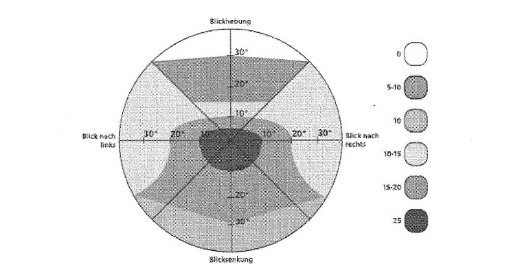

VersMedV
Ausfertigungsdatum: 10.12.2008
Vollzitat:
"Versorgungsmedizin-Verordnung vom 10. Dezember 2008 (BGBl. I S. 2412), die zuletzt durch Artikel 2 der Verordnung vom 19. Juni 2023 (BGBl. 2023 I Nr. 158) geändert worden ist"
| Stand: | Zuletzt geändert durch Art. 2 V v. 19.6.2023 I Nr. 158 |
(+++ Textnachweis ab: 1.1.2009 +++)
| Inhaltsverzeichnis | ||
| Teil A: Allgemeine Grundsätze | ||
| 1. | Schädigungsfolgen | 8 |
| 2. | Grad der Schädigungsfolgen (GdS), Grad der Behinderung (GdB) | 8 |
| 3. | Gesamt-GdS | 10 |
| 4. | Hilflosigkeit | 11 |
| 5. | Besonderheiten der Beurteilung der Hilflosigkeit bei Kindern und Jugendlichen | 12 |
| 6. | Blindheit und hochgradige Sehbehinderung | 14 |
| 7. | Wesentliche Änderung der Verhältnisse | 15 |
| Teil B: GdS-Tabelle | ||
| 1. | Allgemeine Hinweise zur GdS-Tabelle | 18 |
| 2. | Kopf und Gesicht | 18 |
| 3. | Nervensystem und Psyche | 20 |
| 4. | Sehorgan | 29 |
| 5. | Hör- und Gleichgewichtsorgan | 33 |
| 6. | Nase | 38 |
| 7. | Mundhöhle, Rachenraum und obere Luftwege | 38 |
| 8. | Brustkorb, tiefere Atemwege und Lungen | 43 |
| 9. | Herz und Kreislauf | 46 |
| 10. | Verdauungsorgane | 52 |
| 11. | Brüche (Hernien) | 62 |
| 12. | Harnorgane | 63 |
| 13. | Männliche Geschlechtsorgane | 68 |
| 14. | Weibliche Geschlechtsorgane | 70 |
| 15. | Stoffwechsel, innere Sekretion | 73 |
| 16. | Blut, blutbildende Organe, Immunsystem | 76 |
| 17. | Haut | 81 |
| 18. | Haltungs- und Bewegungsorgane, rheumatische Krankheiten | 85 |
| Teil C: Begutachtung im Sozialen Entschädigungsrecht | ||
| 1. | Grundsätze zur Begutachtung im Sozialen Entschädigungsrecht | |
| 2. | Tatsachen für die Begutachtung des ursächlichen Zusammenhangs | |
| 3. | Ursächlicher Zusammenhang | |
| 4. | Kann-Versorgung | |
| 5. | Anerkennung der Schädigungsfolge im Sinne der Entstehung und Anerkennung der Schädigungsfolge im Sinne der Verschlimmerung | |
| 6. | Bestimmung des Grades der Schädigungsfolgen | |
| 7. | Folgeschaden | |
| 8. | Folgen von medizinischen Maßnahmen | |
| 9. | Absichtlich herbeigeführte Gesundheitsstörungen | |
| 10. | Ursächlicher Zusammenhang zwischen Schädigungsfolge und Tod | |
| Teil D: Merkzeichen | ||
| 1. | Erhebliche Beeinträchtigung der Bewegungsfähigkeit im Straßenverkehr (Merkzeichen G) | 114 |
| 2. | Berechtigung für eine ständige Begleitung (Merkzeichen B) | 115 |
| 3. | (aufgehoben) | 115 |
| 4. | Gehörlosigkeit (Merkzeichen Gl) | 116 |
| 2.1 Narben nach Warzenfortsatzaufmeißelung | 0 | |
| Einfache Schädelbrüche ohne Komplikationen im Heilverlauf | 0 | |
| Kleinere Knochenlücken, Substanzverluste (auch größere gedeckte) am knöchernen Schädel | 0-10 | |
| Schädelnarben am Hirnschädel mit erheblichem Verlust von Knochenmasse ohne Funktionsstörung des Gehirns (einschließlich entstellender Wirkung) | 30 | |
| Hierzu gehören insbesondere alle traumatisch entstandenen erheblichen (nicht gedeckten) Substanzverluste am Hirnschädel, die auch das innere Knochenblatt betreffen. | ||
| Einfache Gesichtsentstellung | ||
| nur wenig störend | 10 | |
| sonst | 20-30 | |
| Hochgradige Entstellung des Gesichts | 50 | |
| 2.2 Sensibilitätsstörungen im Gesichtsbereich | ||
| leicht | 0-10 | |
| ausgeprägt, den oralen Bereich einschließend | 20-30 | |
| Gesichtsneuralgien (z. B. Trigeminusneuralgie) | ||
| leicht (seltene, leichte Schmerzen) | 0-10 | |
| mittelgradig | ||
| (häufigere, leichte bis mittelgradige Schmerzen, schon durch geringe Reize auslösbar) | 20-40 | |
| schwer | ||
| (häufige, mehrmals im Monat auftretende starke Schmerzen bzw. Schmerzattacken) | 50-60 | |
| besonders schwer | ||
| (starker Dauerschmerz oder Schmerzattacken mehrmals wöchentlich) | 70-80 | |
| 2.3 Echte Migräne | ||
| je nach Häufigkeit und Dauer der Anfälle und Ausprägung der Begleiterscheinungen. | ||
| leichte Verlaufsform | ||
| (Anfälle durchschnittlich einmal monatlich) | 0-10 | |
| mittelgradige Verlaufsform | ||
| (häufigere Anfälle, jeweils einen oder mehrere Tage anhaltend) | 20-40 | |
| schwere Verlaufsform | ||
| (lang andauernde Anfälle mit stark ausgeprägten Begleiterscheinungen, Anfallspausen von nur wenigen Tagen) | 50-60 | |
| 2.4 Periphere Fazialisparese | ||
| einseitig | ||
| kosmetisch nur wenig störende Restparese | 0-10 | |
| ausgeprägtere Restparese oder Kontrakturen | 20-30 | |
| komplette Lähmung oder ausgeprägte Kontraktur | 40 | |
| beidseitig komplette Lähmung | 50 | |
| 3.1.1 Grundsätze der Gesamtbewertung von Hirnschäden | ||
| Hirnschäden mit geringer Leistungsbeeinträchtigung | 30-40 | |
| Hirnschäden mit mittelschwerer Leistungsbeeinträchtigung | 50-60 | |
| Hirnschäden mit schwerer Leistungsbeeinträchtigung | 70-100 | |
| 3.1.2 Bewertung von Hirnschäden mit isoliert vorkommenden bzw. führenden Syndromen | ||
| (bei Begutachtungen im sozialen Entschädigungsrecht auch zur Feststellung der Schwerstbeschädigtenzulage) | ||
| Hirnschäden mit psychischen Störungen | ||
| leicht (im Alltag sich gering auswirkend) | 30-40 | |
| mittelgradig (im Alltag sich deutlich auswirkend) | 50-60 | |
| schwer | 70-100 | |
| Zentrale vegetative Störungen als Ausdruck eines Hirndauerschadens (z. B. Störungen des Schlaf-Wach-Rhythmus, der Vasomotorenregulation oder der Schweißregulation) | ||
| leicht | 30 | |
| mittelgradig, auch mit vereinzelten synkopalen Anfällen | 40 | |
| mit häufigeren Anfällen oder erheblichen Auswirkungen auf den Allgemeinzustand | 50 | |
| Koordinations- und Gleichgewichtsstörungen (spino-) zerebellarer Ursache je nach dem Ausmaß der Störung der Ziel- und Feinmotorik einschließlich der Schwierigkeiten beim Gehen und Stehen | ||
| (siehe hierzu auch bei Hör- und Gleichgewichtsorgan) | 30-100 | |
| Hirnschäden mit kognitiven Leistungsstörungen (z. B. Aphasie, Apraxie, Agnosie) | ||
| leicht (z. B. Restaphasie) | 30-40 | |
| mittelgradig (z. B. Aphasie mit deutlicher bis sehr ausgeprägter Kommunikationsstörung) | 50-80 | |
| schwer (z. B. globale Aphasie) | 90-100 | |
| Zerebral bedingte Teillähmungen und Lähmungen | ||
| leichte Restlähmungen und Tonusstörungen der Gliedmaßen | 30 | |
| bei ausgeprägteren Teillähmungen und vollständigen Lähmungen ist der GdS aus Vergleichen mit dem GdS bei Gliedmaßenverlusten, peripheren Lähmungen und anderen Funktionseinbußen der Gliedmaßen abzuleiten. vollständige Lähmung von Arm und Bein (Hemiplegie) | 100 | |
| Parkinson-Syndrom | ||
| ein- oder beidseitig, geringe Störung der Bewegungsabläufe, keine Gleichgewichtsstörung, geringe Verlangsamung | 30-40 | |
| deutliche Störung der Bewegungsabläufe, Gleichgewichtsstörungen, Unsicherheit beim Umdrehen, stärkere Verlangsamung | 50-70 | |
| schwere Störung der Bewegungsabläufe bis zur Immobilität | 80-100 | |
| Andere extrapyramidale Syndrome - auch mit Hyperkinesen - sind analog nach Art und Umfang der gestörten Bewegungsabläufe und der Möglichkeit ihrer Unterdrückung zu bewerten; bei lokalisierten Störungen (z. B. Torticollis spasmodicus) sind niedrigere GdS als bei generalisierten (z. B. choreatische Syndrome) in Betracht zu ziehen. | ||
| Epileptische Anfälle | ||
| je nach Art, Schwere, Häufigkeit und tageszeitlicher Verteilung | ||
| sehr selten (generalisierte [große] und komplex-fokale Anfälle mit Pausen von mehr als einem Jahr; kleine und einfach-fokale Anfälle mit Pausen von Monaten) | 40 | |
| selten | ||
| (generalisierte [große] und komplex-fokale Anfälle mit Pausen von Monaten; kleine und einfach-fokale Anfälle mit Pausen von Wochen) | 50-60 | |
| mittlere Häufigkeit | ||
| (generalisierte [große] und komplex-fokale Anfälle mit Pausen von Wochen; kleine und einfach-fokale Anfälle mit Pausen von Tagen) | 60-80 | |
| häufig | ||
| (generalisierte [große] oder komplex-fokale Anfälle wöchentlich oder Serien von generalisierten Krampfanfällen, von fokal betonten oder von multifokalen Anfällen; kleine und einfach-fokale Anfälle täglich) | 90-100 | |
| nach drei Jahren Anfallsfreiheit bei weiterer Notwendigkeit antikonvulsiver Behandlung | 30 | |
| Ein Anfallsleiden gilt als abgeklungen, wenn ohne Medikation drei Jahre Anfallsfreiheit besteht. Ohne nachgewiesenen Hirnschaden ist dann kein GdS mehr anzunehmen. | ||
| 3.2 Narkolepsie | ||
| Je nach Häufigkeit, Ausprägung und Kombination der Symptome (Tagesschläfrigkeit, Schlafattacken, Kataplexien, automatisches Verhalten im Rahmen von Ermüdungserscheinungen, Schlaflähmungen - häufig verbunden mit hypnagogen Halluzinationen) ist im Allgemeinen ein GdS von 50 bis 80 anzusetzen. | ||
| 3.3 Hirntumoren | ||
| Der GdS von Hirntumoren ist vor allem von der Art und Dignität und von der Ausdehnung und Lokalisation mit ihren Auswirkungen abhängig. | ||
| Nach der Entfernung gutartiger Tumoren (z. B. Meningeom, Neurinom) richtet sich der GdS allein nach dem verbliebenen Schaden. | ||
| Bei Tumoren wie Oligodendrogliom, Ependymom, Astrozytom II, ist der GdS, wenn eine vollständige Tumorentfernung nicht gesichert ist, nicht niedriger als 50 anzusetzen. | ||
| Bei malignen Tumoren (z. B. Astrozytom III, Glioblastom, Medulloblastom) ist der GdS mit wenigstens 80 zu bewerten. | ||
| Das Abwarten einer Heilungsbewährung (von fünf Jahren) kommt in der Regel nur nach der Entfernung eines malignen Kleinhirntumors des Kindesalters (z. B. Medulloblastom) in Betracht. Der GdS beträgt während dieser Zeit (im Frühstadium) bei geringer Leistungsbeeinträchtigung 50. | ||
| 3.4 Beeinträchtigungen der geistigen Leistungsfähigkeit im Kindes- und Jugendalter | ||
| Die GdS-Beurteilung der Beeinträchtigungen der geistigen Entwicklung darf nicht allein vom Ausmaß der Intelligenzminderung und von diesbezüglichen Testergebnissen ausgehen, die immer nur Teile der Behinderung zu einem bestimmten Zeitpunkt erfassen können. Daneben muss stets auch die Persönlichkeitsentwicklung auf affektivem und emotionalem Gebiet, wie auch im Bereich des Antriebs und der Prägung durch die Umwelt mit allen Auswirkungen auf die sozialen Einordnungsmöglichkeiten berücksichtigt werden. | ||
| 3.4.1 Entwicklungsstörungen im Kleinkindesalter | ||
| Die Beurteilung setzt eine standardisierte Befunderhebung mit Durchführung geeigneter Testverfahren voraus (Nachuntersuchung mit Beginn der Schulpflicht). Umschriebene Entwicklungsstörungen in den Bereichen Motorik, Sprache oder Wahrnehmung und Aufmerksamkeit | ||
| leicht, ohne wesentliche Beeinträchtigung der Gesamtentwicklung | 0-10 | |
| sonst - bis zum Ausgleich - | ||
| je nach Beeinträchtigung der Gesamtentwicklung | 20-40 | |
| bei besonders schwerer Ausprägung | 50 | |
| Globale Entwicklungsstörungen (Einschränkungen in den Bereichen Sprache und Kommunikation, Wahrnehmung und Spielverhalten, Motorik, Selbständigkeit, soziale Integration) | ||
| je nach Ausmaß der sozialen Einordnungsstörung und der Verhaltensstörung (z. B. Hyperaktivität, Aggressivität) | ||
| geringe Auswirkungen | 30-40 | |
| starke Auswirkungen | ||
| (z. B. Entwicklungsquotient [EQ] von 70 bis über 50) | 50-70 | |
| schwere Auswirkungen (z. B. EQ 50 und weniger) | 80-100 | |
| 3.4.2 Einschränkung der geistigen Leistungsfähigkeit im Schul- und Jugendalter | ||
| Kognitive Teilleistungsschwächen (z. B. Lese-Rechtschreib-Schwäche [Legasthenie], isolierte Rechenstörung) | ||
| leicht, ohne wesentliche Beeinträchtigung der Schulleistungen | 0-10 | |
| sonst - auch unter Berücksichtigung von Konzentrations- und Aufmerksamkeitsstörungen - bis zum Ausgleich | 20-40 | |
| bei besonders schwerer Ausprägung (selten) | 50 | |
| Einschränkung der geistigen Leistungsfähigkeit mit einem Intelligenzrückstand entsprechend einem Intelligenz-Alter (I.A.) von etwa 10 bis 12 Jahren bei Erwachsenen (Intelligenzquotient [IQ] von etwa 70 bis 60) | ||
| wenn während des Schulbesuchs nur geringe Störungen, insbesondere der Auffassung, der Merkfähigkeit, der psychischen Belastbarkeit, der sozialen Einordnung, des Sprechens, der Sprache, oder anderer kognitiver Teilleistungen vorliegen | 30-40 | |
| wenn sich nach Abschluss der Schule noch eine weitere Bildungsfähigkeit gezeigt hat und keine wesentlichen, die soziale Einordnung erschwerenden Persönlichkeitsstörungen bestehen | 30-40 | |
| wenn ein Ausbildungsberuf unter Nutzung der Sonderregelungen für behinderte Menschen erreicht werden kann | 30-40 | |
| wenn während des Schulbesuchs die oben genannten Störungen stark ausgeprägt sind oder mit einem Schulversagen zu rechnen ist | 50-70 | |
| wenn nach Abschluss der Schule auf eine Beeinträchtigung der Fähigkeit zu selbständiger Lebensführung oder sozialer Einordnung geschlossen werden kann | 50-70 | |
| wenn der behinderte Mensch wegen seiner Behinderung trotz beruflicher Fördermöglichkeiten (z. B. in besonderen Rehabilitationseinrichtungen) nicht in der Lage ist, sich auch unter Nutzung der Sonderregelungen für behinderte Menschen beruflich zu qualifizieren | 50-70 | |
| Intelligenzmangel mit stark eingeengter Bildungsfähigkeit, erheblichen Mängeln im Spracherwerb, Intelligenzrückstand entsprechend einem I.A. unter 10 Jahren bei Erwachsenen (IQ unter 60) | ||
| bei relativ günstiger Persönlichkeitsentwicklung und sozialer Anpassungsmöglichkeit (Teilerfolg in einer Sonderschule, selbständige Lebensführung in einigen Teilbereichen und Einordnung im allgemeinen Erwerbsleben mit einfachen motorischen Fertigkeiten noch möglich) | 80-90 | |
| bei stärkerer Einschränkung der Eingliederungsmöglichkeiten mit hochgradigem Mangel an Selbständigkeit und Bildungsfähigkeit, fehlender Sprachentwicklung, unabhängig von der Arbeitsmarktlage und auf Dauer Beschäftigungsmöglichkeit nur in einer Werkstatt für Behinderte | 100 | |
| 3.5 Verhaltens- und emotionale Störungen mit Beginn in der Kindheit und Jugend | ||
| Die Kriterien der Definitionen der ICD 10-GM Version 2011 müssen erfüllt sein. Komorbide psychische Störungen sind gesondert zu berücksichtigen. Eine Behinderung liegt erst ab Beginn der Teilhabebeeinträchtigung vor. Eine pauschale Festsetzung des GdS nach einem bestimmten Lebensalter ist nicht möglich. | ||
| 3.5.1 Tief greifende Entwicklungsstörungen (insbesondere frühkindlicher Autismus, atypischer Autismus, Asperger-Syndrom) Bei tief greifenden Entwicklungsstörungen
Soziale Anpassungsschwierigkeiten liegen insbesondere vor, wenn die Integrationsfähigkeit in Lebensbereiche (wie zum Beispiel Regel-Kindergarten, Regel-Schule, allgemeiner Arbeitsmarkt, öffentliches Leben, häusliches Leben) nicht ohne besondere Förderung oder Unterstützung (zum Beispiel durch Eingliederungshilfe) gegeben ist oder wenn die Betroffenen einer über das dem jeweiligen Alter entsprechende Maß hinausgehenden Beaufsichtigung bedürfen. Mittlere soziale Anpassungsschwierigkeiten liegen insbesondere vor, wenn die Integration in Lebensbereiche nicht ohne umfassende Unterstützung (zum Beispiel einen Integrationshelfer als Eingliederungshilfe) möglich ist. Schwere soziale Anpassungsschwierigkeiten liegen insbesondere vor, wenn die Integration in Lebensbereiche auch mit umfassender Unterstützung nicht möglich ist. | ||
| 3.5.2 Hyperkinetische Störungen und Aufmerksamkeitsstörungen ohne Hyperaktivität Ohne soziale Anpassungsschwierigkeiten liegt keine Teilhabebeeinträchtigung vor. Bei sozialen Anpassungsschwierigkeiten
Ab dem Alter von 25 Jahren beträgt der GdS regelhaft nicht mehr als 50. | ||
| 3.5.3 Störungen des Sozialverhaltens und Störungen sozialer Funktionen mit Beginn in der Kindheit und Jugend sind je nach Ausmaß der Teilhabebeeinträchtigung, insbesondere der Einschränkung der sozialen Integrationsfähigkeit und dem Betreuungsaufwand, individuell zu bewerten. | ||
| 3.6 Schizophrene und affektive Psychosen | ||
| Langdauernde (über ein halbes Jahr anhaltende) Psychose im floriden Stadium je nach Einbuße beruflicher und sozialer Anpassungsmöglichkeiten | 50-100 | |
| Schizophrener Residualzustand (z. B. Konzentrationsstörung, Kontaktschwäche, Vitalitätseinbuße, affektive Nivellierung) mit geringen und einzelnen Restsymptomen | ||
| ohne soziale Anpassungsschwierigkeiten | 10-20 | |
| mit leichten sozialen Anpassungsschwierigkeiten | 30-40 | |
| mit mittelgradigen sozialen Anpassungsschwierigkeiten | 50-70 | |
| mit schweren sozialen Anpassungsschwierigkeiten | 80-100 | |
| Affektive Psychose mit relativ kurz andauernden, aber häufig wiederkehrenden Phasen | ||
| bei 1 bis 2 Phasen im Jahr von mehrwöchiger Dauer je nach Art und Ausprägung | 30-50 | |
| bei häufigeren Phasen von mehrwöchiger Dauer | 60-100 | |
| Nach dem Abklingen lang dauernder psychotischer Episoden ist eine Heilungsbewährung von zwei Jahren abzuwarten. | ||
| GdS während dieser Zeit, wenn bereits mehrere manische oder manische und depressive Phasen vorangegangen sind | 50 | |
| sonst | 30 | |
| Eine Heilungsbewährung braucht nicht abgewartet zu werden, wenn eine monopolar verlaufene depressive Phase vorgelegen hat, die als erste Krankheitsphase oder erst mehr als zehn Jahre nach einer früheren Krankheitsphase aufgetreten ist. | ||
| 3.7 Neurosen, Persönlichkeitsstörungen, Folgen psychischer Traumen | ||
| Leichtere psychovegetative oder psychische Störungen | 0-20 | |
| Stärker behindernde Störungen | ||
| mit wesentlicher Einschränkung der Erlebnis- und Gestaltungsfähigkeit | ||
| (z. B. ausgeprägtere depressive, hypochondrische, asthenische oder phobische Störungen, Entwicklungen mit Krankheitswert, somatoforme Störungen) | 30-40 | |
| Schwere Störungen (z. B. schwere Zwangskrankheit) | ||
| mit mittelgradigen sozialen Anpassungsschwierigkeiten | 50-70 | |
| mit schweren sozialen Anpassungsschwierigkeiten | 80-100 | |
| 3.8 Psychische Störungen und Verhaltensstörungen durch psychotrope Substanzen | ||
| Der schädliche Gebrauch psychotroper Substanzen ohne körperliche oder psychische Schädigung bedingt keinen Grad der Schädigungsfolgen. Die Abhängigkeit von Koffein oder Tabak sowie von Koffein und Tabak bedingt für sich allein in der Regel keine Teilhabebeeinträchtigung. | ||
Abhängigkeit von psychotropen Substanzen liegt vor, wenn als Folge des chronischen Substanzkonsums mindestens drei der folgenden Kriterien erfüllt sind:
| ||
| Bei schädlichem Gebrauch von psychotropen Substanzen mit leichteren psychischen Störungen beträgt der GdS 0–20. | ||
Bei Abhängigkeit:
| ||
| Ist im Fall einer Abhängigkeit, die zuvor mit einem GdS von mindestens 50 zu bewerten war, Abstinenz erreicht, muss eine Heilungsbewährung von zwei Jahren ab dem Zeitpunkt des Beginns der Abstinenz abgewartet werden. Während dieser Zeit ist ein GdS von 30 anzunehmen, es sei denn, die bleibenden psychischen oder hirnorganischen Störungen rechtfertigen einen höheren GdS. Weitere Organschäden sind unter Beachtung von Teil A Nummer 2 Buchstabe e der Versorgungsmedizinischen Grundsätze zu bewerten. | ||
| Abnorme Gewohnheiten und Störungen der Impulskontrolle sind nach Teil B Nummer 3.7 zu bewerten. | ||
| 3.9 Rückenmarkschäden | ||
| Unvollständige, leichte Halsmarkschädigung mit beidseits geringen motorischen und sensiblen Ausfällen, ohne Störungen der Blasen- und Mastdarmfunktion | 30-60 | |
| Unvollständige Brustmark-, Lendenmark- oder Kaudaschädigung mit Teillähmung beider Beine, ohne Störungen der Blasen- und Mastdarmfunktion | 30-60 | |
| Unvollständige Brustmark-, Lendenmark- oder Kaudaschädigung mit Teillähmung beider Beine und Störungen der Blasen- und/oder Mastdarmfunktion | 60-80 | |
| Unvollständige Halsmarkschädigung mit gewichtigen Teillähmungen beider Arme und Beine und Störungen der Blasen- und/oder Mastdarmfunktion | 100 | |
| Vollständige Halsmarkschädigung mit vollständiger Lähmung beider Arme und Beine und Störungen der Blasen- und/ oder Mastdarmfunktion | 100 | |
| Vollständige Brustmark-, Lendenmark-, oder Kaudaschädigung mit vollständiger Lähmung der Beine und Störungen der Blasen und/oder Mastdarmfunktion | 100 | |
| 3.10 Multiple Sklerose | ||
| Der GdS richtet sich vor allem nach den zerebralen und spinalen Ausfallserscheinungen. Zusätzlich ist die aus dem klinischen Verlauf sich ergebende Krankheitsaktivität zu berücksichtigen. | ||
| 3.11 Polyneuropathien | ||
| Bei den Polyneuropathien ergeben sich die Funktionsbeeinträchtigungen aufgrund motorischer Ausfälle (mit Muskelatrophien), sensibler Störungen oder Kombinationen von beiden. Der GdS motorischer Ausfälle ist in Analogie zu den peripheren Nervenschäden einzuschätzen. Bei den sensiblen Störungen und Schmerzen ist zu berücksichtigen, dass schon leichte Störungen zu Beeinträchtigungen - z. B. bei Feinbewegungen - führen können. | ||
| Die Sehbehinderung umfasst alle Störungen des Sehvermögens. Für die Beurteilung ist in erster Linie die korrigierte Sehschärfe maßgebend; daneben sind u. a. Ausfälle des Gesichtsfeldes und des Blickfeldes zu berücksichtigen. | |||
| Die Sehschärfe ist grundsätzlich entsprechend den Empfehlungen der Deutschen Ophthalmologischen Gesellschaft (DOG) nach DIN 58220 zu bestimmen; Abweichungen hiervon sind nur in Ausnahmefällen zulässig (zum Beispiel bei Bettlägerigkeit oder Kleinkindern). Die übrigen Partialfunktionen des Sehvermögens sind nur mit Geräten oder Methoden zu prüfen, die den Empfehlungen der DOG entsprechend eine gutachtenrelevante einwandfreie Beurteilung erlauben. | |||
| Hinsichtlich der Gesichtsfeldbestimmung bedeutet dies, dass zur Feststellung von Gesichtsfeldausfällen nur Ergebnisse der manuellkinetischen Perimetrie entsprechend der Marke Goldmann III/4e verwertet werden dürfen. | |||
| Bei der Beurteilung von Störungen des Sehvermögens ist darauf zu achten, dass der morphologische Befund die Sehstörungen erklärt. | |||
| Die Grundlage für die GdS-Beurteilung bei Herabsetzung der Sehschärfe bildet die „MdE-Tabelle der DOG". | |||
| 4.1 Verlust eines Auges mit dauernder, einer Behandlung nicht | |||
| zugänglichen Eiterung der Augenhöhle | 40 | ||
| 4.2 Linsenverlust | |||
| Linsenverlust korrigiert durch intraokulare Kunstlinse oder Kontaktlinse | |||
| Linsenverlust eines Auges | |||
| Sehschärfe 0,4 und mehr | 10 | ||
| Sehschärfe 0,1 bis weniger als 0,4 | 20 | ||
| Sehschärfe weniger als 0,1 | 25-30 | ||
| Linsenverlust beider Augen | |||
| Beträgt der sich aus der Sehschärfe für beide Augen ergebende GdS nicht mehr als 60, ist dieser um 10 zu erhöhen. | |||
| Die GdS-Werte setzen die Verträglichkeit der Linsen voraus. Maßgebend ist der objektive Befund. | |||
| Bei Versorgung mit Starbrille ist der aus der Sehschärfe für beide Augen sich ergebende GdS um 10 zu erhöhen, bei Blindheit oder Verlust des anderen Auges um 20. | |||
| Bei Unkorrigierbarkeit richtet sich der GdS nach der Restsehschärfe. | |||
| 4.3 Die augenärztliche Untersuchung umfasst die Prüfung der einäugigen und beidäugigen Sehschärfe. Sind die Ergebnisse beider Prüfungsarten unterschiedlich, so ist bei der Bewertung die beidäugige Sehschärfe als Sehschärfewert des besseren Auges anzusetzen. | |||
| RA | 1,0 | 0,8 | 0,63 | 0,5 | 0,4 | 0,32 | 0,25 | 0,2 | 0,16 | 0,1 | 0,08 | 0,05 | 0,02 | 0 | |
| Sehschärfe | 5/5 | 5/6 | 5/8 | 5/10 | 5/12 | 5/15 | 5/20 | 5/25 | 5/30 | 5/50 | 1/12 | 1/20 | 1/50 | 0 | |
| LA | |||||||||||||||
| 1,0 | 5/5 | 0 | 0 | 0 | 5 | 5 | 10 | 10 | 10 | 15 | 20 | 20 | 25 | 25 | *25 |
| 0,8 | 5/6 | 0 | 0 | 5 | 5 | 10 | 10 | 10 | 15 | 20 | 20 | 25 | 30 | 30 | 30 |
| 0,63 | 5/8 | 0 | 5 | 10 | 10 | 10 | 10 | 15 | 20 | 20 | 25 | 30 | 30 | 30 | 40 |
| 0,5 | 5/10 | 5 | 5 | 10 | 10 | 10 | 15 | 20 | 20 | 25 | 30 | 30 | 35 | 40 | 40 |
| 0,4 | 5/12 | 5 | 10 | 10 | 10 | 20 | 20 | 25 | 25 | 30 | 30 | 35 | 40 | 50 | 50 |
| 0,32 | 5/15 | 10 | 10 | 10 | 15 | 20 | 30 | 30 | 30 | 40 | 40 | 40 | 50 | 50 | 50 |
| 0,25 | 5/20 | 10 | 10 | 15 | 20 | 25 | 30 | 40 | 40 | 40 | 50 | 50 | 50 | 60 | 60 |
| 0,2 | 5/25 | 10 | 15 | 20 | 20 | 25 | 30 | 40 | 50 | 50 | 50 | 60 | 60 | 70 | 70 |
| 0,16 | 5/30 | 15 | 20 | 20 | 25 | 30 | 40 | 40 | 50 | 60 | 60 | 60 | 70 | 80 | 80 |
| 0,1 | 5/50 | 20 | 20 | 25 | 30 | 30 | 40 | 50 | 50 | 60 | 70 | 70 | 80 | 90 | 90 |
| 0,08 | 1/12 | 20 | 25 | 30 | 30 | 35 | 40 | 50 | 60 | 60 | 70 | 80 | 90 | 90 | 90 |
| 0,05 | 1/20 | 25 | 30 | 30 | 35 | 40 | 50 | 50 | 60 | 70 | 80 | 90 | 100 | 100 | 100 |
| 0,02 | 1/50 | 25 | 30 | 30 | 40 | 50 | 50 | 60 | 70 | 80 | 90 | 90 | 100 | 100 | 100 |
| 0 | 0 | *25 | 30 | 40 | 40 | 50 | 50 | 60 | 70 | 80 | 90 | 90 | 100 | 100 | 100 |
| 4.4 Augenmuskellähmungen, Strabismus | |||
| wenn ein Auge wegen der Doppelbilder vom Sehen ausgeschlossen werden muss | 30 | ||
| bei Doppelbildern nur in einigen Blickfeldbereichen bei sonst normalem Binokularsehen ergibt sich der GdS aus dem nachstehenden Schema von Haase und Steinhorst: | |||
|  | |||
| bei einseitiger Bildunterdrückung durch Gewöhnung (Exklusion) und entsprechendem Verschwinden der Doppelbilder | 10 | ||
| Einschränkungen der Sehschärfe (z. B. Amblyopie) oder eine erheblich entstellende Wirkung sind ggf. zusätzlich zu berücksichtigen. | |||
| Lähmung des Oberlides mit nicht korrigierbarem, vollständigem | |||
| Verschluss des Auges | 30 | ||
| sonst | 10-20 | ||
| Fehlstellungen der Lider, Verlegung der Tränenwege mit Tränenträufeln | |||
| einseitig | 0-10 | ||
| beidseitig | 10-20 | ||
| 4.5 Gesichtsfeldausfälle | |||
| Vollständige Halbseiten- und Quadrantenausfälle | |||
| Homonyme Hemianopsie | 40 | ||
| Bitemporale Hemianopsie | 30 | ||
| Binasale Hemianopsie | |||
| bei beidäugigem Sehen | 10 | ||
| bei Verlust des beidäugigen Sehens | 30 | ||
| Homonymer Quadrant oben | 20 | ||
| Homonymer Quadrant unten | 30 | ||
| Vollständiger Ausfall beider unterer Gesichtsfeldhälften | 60 | ||
| Ausfall einer Gesichtsfeldhälfte bei Verlust oder Blindheit des anderen Auges | |||
| nasal | 60 | ||
| temporal | 70 | ||
| Bei unvollständigen Halbseiten- und Quadrantenausfällen ist der GdS entsprechend niedriger anzusetzen. | |||
| Gesichtsfeldeinengungen | |||
| Allseitige Einengung bei normalem Gesichtsfeld des anderen Auges | |||
| auf 10° Abstand vom Zentrum | 10 | ||
| auf 5° Abstand vom Zentrum | 25 | ||
| Allseitige Einengung binokular | |||
| auf 50° Abstand vom Zentrum | 10 | ||
| auf 30° Abstand vom Zentrum | 30 | ||
| auf 10° Abstand vom Zentrum | 70 | ||
| auf 5° Abstand vom Zentrum | 100 | ||
| Allseitige Einengung bei Fehlen des anderen Auges | |||
| auf 50° Abstand vom Zentrum | 40 | ||
| auf 30° Abstand vom Zentrum | 60 | ||
| auf 10° Abstand vom Zentrum | 90 | ||
| auf 5° Abstand vom Zentrum | 100 | ||
| Unregelmäßige Gesichtsfeldausfälle, Skotome im 50°-Gesichtsfeld unterhalb des horizontalen Meridians, binokular | |||
| mindestens 1/3 ausgefallene Fläche | 20 | ||
| mindestens 2/3 ausgefallene Fläche | 50 | ||
| Bei Fehlen eines Auges sind die Skotome entsprechend höher zu bewerten. | |||
| 4.6 Ausfall des Farbensinns | 0 | ||
| Einschränkung der Dunkeladaptation (Nachtblindheit) oder des Dämmerungssehens | 0-10 | ||
| 4.7 Nach Hornhauttransplantationen richtet sich der GdS allein nach dem Sehvermögen. | |||
| 4.8 Nach Entfernung eines malignen Augentumors ist in den ersten fünf Jahren eine Heilungsbewährung abzuwarten; GdS während dieser Zeit | |||
| bei Tumorbegrenzung auf den Augapfel (auch bei Augapfelentfernung) | 50 | ||
| sonst | wenigstens 80 | ||
| Maßgebend für die Bewertung des GdS bei Hörstörungen ist die Herabsetzung des Sprachgehörs, deren Umfang durch Prüfung ohne Hörhilfen zu bestimmen ist. Der Beurteilung ist die von der Deutschen Gesellschaft für Hals-Nasen-Ohrenheilkunde, Kopf- und Hals-Chirurgie empfohlene Tabelle (siehe Nummer 5.2.4, Tabelle D) zugrunde zu legen. Nach Durchführung eines Ton- und Sprachaudiogramms ist der Prozentsatz des Hörverlustes aus entsprechenden Tabellen abzuleiten. | |||
| Die in der GdS-Tabelle enthaltenen Werte zur Schwerhörigkeit berücksichtigen die Möglichkeit eines Teilausgleichs durch Hörhilfen mit. | |||
| Sind mit der Hörstörung andere Erscheinungen verbunden, z. B. Ohrgeräusche, Gleichgewichtsstörungen, Artikulationsstörungen oder außergewöhnliche psychoreaktive Störungen, so kann der GdS entsprechend höher bewertet werden. | |||
| 5.1 Angeborene oder in der Kindheit erworbene Taubheit oder an Taubheit grenzende Schwerhörigkeit mit Sprachstörungen | |||
| angeboren oder bis zum 7. Lebensjahr erworben (schwere Störung des Spracherwerbs, in der Regel lebenslang) | 100 | ||
| später erworben (im 8. bis 18. Lebensjahr) mit schweren Sprachstörungen (schwer verständliche Lautsprache, geringer Sprachschatz) | 100 | ||
| sonst je nach Sprachstörung | 80-90 | ||
| 5.2 Hörverlust | |||
| 5.2.1 Zur Ermittlung des prozentualen Hörverlustes aus den Werten der sprachaudiometrischen Untersuchung (nach Boenninghaus u. Röser 1973): | |||
| Hörverlust für Zahlen ind dB | ||||||||||||||
| < | ab | ab | ab | ab | ab | ab | ab | ab | ab | ab | ab | |||
| 20 | 20 | 25 | 30 | 35 | 40 | 45 | 50 | 55 | 60 | 65 | 70 | |||
| Gesamtwortverstehen | < | 20 | 100 | 100 | 100 | 100 | 100 | 100 | 100 | 100 | 100 | 100 | 100 | 100 |
| ab | 20 | 95 | 95 | 95 | 95 | 95 | 95 | 95 | 95 | 95 | 95 | 95 | 100 | |
| ab | 35 | 90 | 90 | 90 | 90 | 90 | 90 | 90 | 90 | 90 | 90 | 95 | 100 | |
| ab | 50 | 80 | 80 | 80 | 80 | 80 | 80 | 80 | 80 | 80 | 90 | 95 | 100 | |
| ab | 75 | 70 | 70 | 70 | 70 | 70 | 70 | 70 | 70 | 80 | 90 | 95 | 100 | |
| ab | 100 | 60 | 60 | 60 | 60 | 60 | 60 | 60 | 70 | 80 | 90 | 95 | ||
| ab | 125 | 50 | 50 | 50 | 50 | 50 | 50 | 60 | 70 | 80 | 90 | |||
| ab | 150 | 40 | 40 | 40 | 40 | 40 | 50 | 60 | 70 | 80 | ||||
| ab | 175 | 30 | 30 | 30 | 30 | 40 | 50 | 60 | 70 | |||||
| ab | 200 | 20 | 20 | 20 | 30 | 40 | 50 | 60 | ||||||
| ab | 225 | 10 | 10 | 20 | 30 | 40 | 50 | |||||||
| ab | 250 | 0 | 10 | 20 | 30 | 40 | ||||||||
| 5.2.2 Zur Ermittlung des prozentualen Hörverlustes aus dem Tonaudiogramm bei unregelmäßigem Verlauf der Tongehörskurve. Der prozentuale Hörverlust ergibt sich durch Addition der vier Teilkomponenten (4-Frequenztabelle nach Röser 1973): |
| Tonhörverlust | |||||
| dB | 500 Hz | 1000 Hz | 2000 Hz | 4000 Hz | |
| 10 | 0 | 0 | 0 | 0 | |
| 15 | 2 | 3 | 2 | 1 | |
| 20 | 3 | 5 | 5 | 2 | |
| 25 | 4 | 8 | 7 | 4 | |
| 30 | 6 | 10 | 9 | 5 | |
| 35 | 8 | 13 | 11 | 6 | |
| 40 | 9 | 16 | 13 | 7 | |
| 45 | 11 | 18 | 16 | 8 | |
| 50 | 12 | 21 | 18 | 9 | |
| 55 | 14 | 24 | 20 | 10 | |
| 60 | 15 | 26 | 23 | 11 | |
| 65 | 17 | 29 | 25 | 12 | |
| 70 | 18 | 32 | 27 | 13 | |
| 75 | 19 | 32 | 28 | 14 | |
| 80 | 19 | 33 | 29 | 14 | |
| ab 85 | 20 | 35 | 30 | 15 | |
| 5.2.3.3 Frequenztabelle nach Röser 1980 für die Beurteilung bei Hochtonverlusten vom Typ Lärmschwerhörigkeit: |
| Tonverlust bei 1 kHz | |||||||||||||
| dB von | 0 | 5 | 15 | 25 | 35 | 45 | 55 | 65 | 75 | 85 | 95 | ||
| bis | 5 | 10 | 20 | 30 | 40 | 50 | 60 | 70 | 80 | 90 | 100 | ||
| Summe bei 2 und 3 kHz | 0 - 15 | 0 | 0 | 0 | 0 | 5 | 5 | Hörverlust in % | |||||
| 20 - 35 | 0 | 0 | 0 | 5 | 10 | 20 | 30 | ||||||
| 40 - 55 | 0 | 0 | 0 | 10 | 20 | 25 | 35 | 45 | |||||
| 60 - 75 | 0 | 0 | 10 | 15 | 25 | 35 | 40 | 50 | 60 | ||||
| 80 - 95 | 0 | 5 | 15 | 25 | 30 | 40 | 50 | 60 | 70 | 80 | |||
| 100 - 115 | 5 | 15 | 20 | 30 | 40 | 45 | 55 | 70 | 80 | 90 | 100 | ||
| 120 - 135 | 10 | 20 | 30 | 35 | 45 | 55 | 65 | 75 | 90 | 100 | 100 | ||
| 140 - 155 | 20 | 25 | 35 | 45 | 50 | 60 | 75 | 85 | 95 | 100 | 100 | ||
| 160 - 175 | 25 | 35 | 40 | 50 | 60 | 70 | 80 | 95 | 100 | 100 | 100 | ||
| 80 - 195 | 30 | 40 | 50 | 55 | 70 | 80 | 90 | 100 | 100 | 100 | 100 | ||
| ab 200 | 40 | 45 | 55 | 65 | 75 | 90 | 100 | 100 | 100 | 100 | 100 | ||
| 5.2.4 Zur Ermittlung des GdS aus den Schwerhörigkeitsgraden für beide Ohren: |
| Rechtes Ohr | Normalhörigkeit | 0 - 20 | 0 | 0 | 10 | 10 | 15 | 20 | |
| 10 | |||||||||
| Geringgradige Schwerhörigkeit | 20 - 40 | 0 | 15 | 20 | 20 | 30 | 30 | ||
| 20 | |||||||||
| Mittelgradige Schwerhörigkeit | 40 - 60 | 10 | 20 | 30 | 30 | 40 | 40 | ||
| 40 | |||||||||
| Hochgradige Schwerhörigkeit | 60-80 | 10 | 20 | 30 | 50 | 50 | 50 | ||
| 60 | |||||||||
| An Taubheit grenzende Schwerhörigkeit | 80 - 95 | 15 | 30 | 40 | 50 | 70 | 70 | ||
| 80 | |||||||||
| Taubheit | 100 | 20 | 30 | 40 | 50 | 70 | 80 | ||
Hörverlust in Prozent | 0 - 20 | 20 - 40 | 40 - 60 | 60 - 80 | 80 - 95 | 100 | |||
| Normalhörigkeit | Geringgradige Schwerhörigkeit | Mittelgradige Schwerhörigkeit | Hochgradige Schwerhörigkeit | An Taubheit grenzende Schwerhörigkeit | Taubheit | ||||
| Linkes Ohr | |||||||||
| 5.3 Gleichgewichtsstörungen | |||
| (Normabweichungen in den apparativ erhobenen neurootologischen Untersuchungsbefunden bedingen für sich allein noch keinen GdS) | |||
| ohne wesentliche Folgen | |||
| beschwerdefrei, allenfalls Gefühl der Unsicherheit bei alltäglichen Belastungen (z. B. Gehen, Bücken, Aufrichten, Kopfdrehungen, leichte Arbeiten in wechselnder Körperhaltung) leichte Unsicherheit, geringe Schwindelerscheinungen (Schwanken) bei höheren Belastungen (z. B. Heben von Lasten, Gehen im Dunkeln, abrupte Körperbewegungen) stärkere Unsicherheit mit Schwindelerscheinungen (Fallneigung, Ziehen nach einer Seite) erst bei außergewöhnlichen Belastungen (z. B. Stehen und Gehen auf Gerüsten, sportliche Übungen mit raschen Körperbewegungen) keine nennenswerten Abweichungen bei den Geh- und Stehversuchen | 0-10 | ||
| mit leichten Folgen | |||
| leichte Unsicherheit, geringe Schwindelerscheinungen wie Schwanken, Stolpern, Ausfallsschritte bei alltäglichen Belastungen, stärkere Unsicherheit und Schwindelerscheinungen bei höheren Belastungen leichte Abweichungen bei den Geh- und Stehversuchen erst auf höherer Belastungsstufe | 20 | ||
| mit mittelgradigen Folgen | |||
| stärkere Unsicherheit, Schwindelerscheinungen mit Fallneigung bereits bei alltäglichen Belastungen, heftiger Schwindel (mit vegetativen Erscheinungen, gelegentlich Übelkeit, Erbrechen) bei höheren und außergewöhnlichen Belastungen deutliche Abweichungen bei den Geh- und Stehversuchen bereits auf niedriger Belastungsstufe | 30-40 | ||
| mit schweren Folgen | |||
| heftiger Schwindel, erhebliche Unsicherheit und Schwierigkeiten bereits beim Gehen und Stehen im Hellen und bei anderen alltäglichen Belastungen, teilweise Gehhilfe erforderlich | 50-70 | ||
| bei Unfähigkeit, ohne Unterstützung zu gehen oder zu stehen | 80 | ||
| Ohrgeräusche (Tinnitus) | |||
| ohne nennenswerte psychische Begleiterscheinungen | 0-10 | ||
| mit erheblichen psychovegetativen Begleiterscheinungen | 20 | ||
| mit wesentlicher Einschränkung der Erlebnis- und Gestaltungsfähigkeit (z. B. ausgeprägte depressive Störungen) | 30-40 | ||
| mit schweren psychischen Störungen und sozialen Anpassungsschwierigkeiten | mindestens 50 | ||
| Menière-Krankheit | |||
| ein bis zwei Anfälle im Jahr | 0-10 | ||
| häufigere Anfälle, je nach Schweregrad | 20-40 | ||
| mehrmals monatlich schwere Anfälle | 50 | ||
| Bleibende Hörstörungen und Ohrgeräusche (Tinnitus) sind zusätzlich zu bewerten. | |||
| 5.4 Chronische Mittelohrentzündung | |||
| ohne Sekretion oder einseitige zeitweise Sekretion | 0 | ||
| einseitige andauernde Sekretion oder zeitweise beidseitige Sekretion | 10 | ||
| andauernd beidseitige Sekretion | 20 | ||
| Radikaloperationshöhle | |||
| reizlos | 0 | ||
| bei unvollständiger Überhäutung und ständiger Sekretion | |||
| einseitig | 10 | ||
| beidseitig | 20 | ||
| 5.5 Verlust einer Ohrmuschel | 20 | ||
| 6.1 Völliger Verlust der Nase | 50 | ||
| Teilverlust der Nase, Sattelnase | |||
| wenig störend | 10 | ||
| sonst | 20-30 | ||
| 6.2 Stinknase (Ozaena), je nach Ausmaß der Borkenbildung und | |||
| des Foetors | 20-40 | ||
| Verengung der Nasengänge | |||
| einseitig je nach Atembehinderung | 0-10 | ||
| doppelseitig mit leichter bis mittelgradiger Atembehinderung | 10 | ||
| doppelseitig mit starker Atembehinderung | 20 | ||
| Chronische Nebenhöhlenentzündung | |||
| leichteren Grades | |||
| (ohne wesentliche Neben- und Folgeerscheinungen) | 0-10 | ||
| schweren Grades | |||
| (ständige erhebliche Eiterabsonderung, Trigeminusreizerscheinungen, Polypenbildung) | 20-40 | ||
| 6.3 Völliger Verlust des Riechvermögens mit der damit verbundenen | |||
| Beeinträchtigung der Geschmackswahrnehmung | 15 | ||
| Völliger Verlust des Geschmackssinns | 10 | ||
| Verletzungs- und Erkrankungsfolgen an den Kiefern, Kiefergelenken und Weichteilen der Mundhöhle, einschließlich der Zunge und der Speicheldrüsen, sind nach dem Grad ihrer Auswirkung auf Sprech-, Kau- und Schluckvermögen zu beurteilen. Eine Gesichtsentstellung ist gesondert zu berücksichtigen. | |||
| 7.1 Lippendefekt mit ständigem Speichelfluss | 20-30 | ||
| Äußere Speichelfistel, Frey-Syndrom | |||
| geringe Sekretion | 10 | ||
| sonst | 20 | ||
| Störung der Speichelsekretion | |||
| (vermehrter Speichelfluss, Mundtrockenheit) | 0-20 | ||
| 7.2 Schwere Funktionsstörung der Zunge durch Gewebsverlust, narbige Fixierung oder Lähmung je nach Umfang und Artikulationsstörung | 30-50 | ||
| Behinderung der Mundöffnung (Schneidekantendistanz zwischen 5 und 25 mm) mit deutlicher Auswirkung auf die Nahrungsaufnahme | 20-40 | ||
| Kieferklemme mit Notwendigkeit der Aufnahme flüssiger oder passierter Nahrung und entsprechenden Sprechstörungen | 50 | ||
| 7.3 Verlust eines Teiles des Unterkiefers mit schlaffer Pseudarthrose | |||
| ohne wesentliche Beeinträchtigung der Kaufunktion und Artikulation | 0-10 | ||
| mit erheblicher Beeinträchtigung der Kaufunktion und Artikulation | 20-50 | ||
| Verlust eines Teiles des Oberkiefers | |||
| ohne wesentliche kosmetische und funktionelle Beeinträchtigung | 0-10 | ||
| mit entstellender Wirkung, wesentlicher Beeinträchtigung der Nasen- und Nebenhöhlen (Borkenbildung, ständige Sekretion) | 20-40 | ||
| 7.4 Umfassender Zahnverlust | |||
| über 1/2 Jahr hinaus prothetisch nur unzureichend zu versorgen | 10-20 | ||
| Verlust erheblicher Teile des Alveolarfortsatzes mit wesentlicher, prothetisch nicht voll ausgleichbarer Funktionsbehinderung | 20 | ||
| 7.5 Ausgedehnter Defekt des Gaumens mit gut sitzender | |||
| Defektprothese | 30 | ||
| Verlust des Gaumens ohne Korrekturmöglichkeit durch geeignete Prothese (Störung der Nahrungsaufnahme) | 50 | ||
| 7.6 Lippen-, Kiefer-, Gaumen- und Segelspalten bei Kindern, bis zum Abschluss der Behandlung | |||
| Isolierte voll ausgebildete Lippenspalte (ein- oder beidseitig) | |||
| bis zum Abschluss der Behandlung (in der Regel ein Jahr nach der Operation) je nach Trinkstörung, Beeinträchtigung der mimischen Muskulatur und Störung der Lautbildung | 30-50 | ||
| Lippen-Kieferspalte | |||
| bis zum Abschluss der Erstbehandlung (in der Regel ein Jahr nach der Operation) | 60-70 | ||
| bis zum Verschluss der Kieferspalte | 50 | ||
| Lippen-Kiefer-Gaumenspalte | |||
| bis zum Abschluss der Erstbehandlung (in der Regel ein Jahr nach der Operation) unter Mitberücksichtigung der regelhaft damit verbundenen Hörstörung (Tubenfehlbelüftung) und der Störung der Nasenatmung | 100 | ||
| bis zum Verschluss der Kieferspalte | 50 | ||
| Komplette Gaumen- und Segelspalte ohne Kieferspalte | |||
| wegen der bis zum Abschluss der Erstbehandlung (in der Regel ein Jahr nach der Operation) bestehenden mit der Lippen-Kiefer-Gaumenspalte vergleichbaren Auswirkungen | 100 | ||
| Isolierte Segelspalte, submuköse Gaumenspalte bis zum Abschluss der Behandlung je nach Ausmaß der Artikulationsstörung | 0-30 | ||
| Ausgeprägte Hörstörungen sind ggf. zusätzlich zu berücksichtigen. Nach Abschluss der Behandlung richtet sich der GdS immer nach der verbliebenen Gesundheitsstörung. | |||
| 7.7 Schluckstörungen | |||
| ohne wesentliche Behinderung der Nahrungsaufnahme je nach Beschwerden | 0-10 | ||
| mit erheblicher Behinderung der Nahrungsaufnahme je nach Auswirkung (Einschränkung der Kostform, verlängerte Essdauer) | 20-40 | ||
| mit häufiger Aspiration und erheblicher Beeinträchtigung des Kräfte- und Ernährungszustandes | 50-70 | ||
| 7.8 Verlust des Kehlkopfes | |||
| bei guter Ersatzstimme und ohne Begleiterscheinungen, unter Mitberücksichtigung der Beeinträchtigung der körperlichen Leistungsfähigkeit (fehlende Bauchpresse) | 70 | ||
| in allen anderen Fällen | 80 | ||
| Anhaltende schwere Bronchitiden und Beeinträchtigungen durch Nervenlähmungen im Hals- und Schulterbereich sind zusätzlich zu berücksichtigen. | |||
| Bei Verlust des Kehlkopfes wegen eines malignen Tumors ist in den ersten fünf Jahren eine Heilungsbewährung abzuwarten; GdB bzw. GdS während dieser Zeit | 100 | ||
| Teilverlust des Kehlkopfes | |||
| je nach Sprechfähigkeit und Beeinträchtigung der körperlichen Leistungsfähigkeit | 20-50 | ||
| Bei Teilverlust des Kehlkopfes wegen eines malignen Tumors ist in den ersten fünf Jahren eine Heilungsbewährung abzuwarten; GdS während dieser Zeit | |||
| bei Geschwulstentfernung im Frühstadium (T1 N0 M0) | 50-60 | ||
| sonst | 80 | ||
| 7.9 Tracheostoma | |||
| reizlos oder mit geringen Reizerscheinungen (Tracheitis, Bronchitis), gute Sprechstimme | 40 | ||
| mit erheblichen Reizerscheinungen und/oder erheblicher Beeinträchtigung der Sprechstimme bis zum Verlust der Sprechfähigkeit (z. B. bei schweren Kehlkopfveränderungen) | 50-80 | ||
| Einschränkungen der Atemfunktion sind ggf. zusätzlich zu berücksichtigen. | |||
| Trachealstenose ohne Tracheostoma | |||
| Der GdS ist je nach Atembehinderung analog der dauernden Einschränkung der Lungenfunktion zu beurteilen. | |||
| 7.10 Funktionelle und organische Stimmstörungen (z. B. Stimmbandlähmung) | |||
| mit geringer belastungsabhängiger Heiserkeit | 0-10 | ||
| mit dauernder Heiserkeit | 20-30 | ||
| nur Flüsterstimme | 40 | ||
| mit völliger Stimmlosigkeit | 50 | ||
| Atembehinderungen sind ggf. zusätzlich zu bewerten analog der dauernden Einschränkung der Lungenfunktion. | |||
| 7.11 Artikulationsstörungen | |||
| durch Lähmungen oder Veränderungen in Mundhöhle oder Rachen | |||
| mit verständlicher Sprache | 10 | ||
| mit schwer verständlicher Sprache | 20-40 | ||
| mit unverständlicher Sprache | 50 | ||
| Stottern | |||
| leicht | 0-10 | ||
| mittelgradig, situationsunabhängig | 20 | ||
| schwer, auffällige Mitbewegungen | 30-40 | ||
| mit unverständlicher Sprache | 50 | ||
| Außergewöhnliche psychoreaktive Störungen einschließlich somatoformer Störungen sind ggf. zusätzlich zu berücksichtigen | |||
| Bei chronischen Krankheiten der Bronchien und des Lungenparenchyms sowie bei Brustfellschwarten richtet sich der GdS vor allem nach der klinischen Symptomatik mit ihren Auswirkungen auf den Allgemeinzustand. Außerdem sind die Einschränkung der Lungenfunktion, die Folgeerscheinungen an anderen Organsystemen (z. B. Cor pulmonale) und bei allergisch bedingten Krankheiten auch die Vermeidbarkeit der Allergene zu berücksichtigen. | |||
| 8.1 Brüche und Defekte der Knochen des Brustkorbs (Rippen, Brustbein, Schlüsselbein) | |||
| ohne Funktionsstörungen verheilt, je nach Ausdehnung des Defektes | 0-10 | ||
| Rippendefekte mit Brustfellschwarten | |||
| ohne wesentliche Funktionsstörung | 0-10 | ||
| bei sehr ausgedehnten Defekten einschließlich entstellender Wirkung | 20 | ||
| Brustfellverwachsungen und -schwarten | |||
| ohne wesentliche Funktionsstörung | 0-10 | ||
| Fremdkörper im Lungengewebe oder in der Brustkorbwand | |||
| reaktionslos eingeheilt | 0 | ||
| 8.2 Chronische Bronchitis, Bronchiektasen | |||
| als eigenständige Krankheiten - ohne dauernde Einschränkung der Lungenfunktion, leichte Form | |||
| (symptomfreie Intervalle über mehrere Monate, wenig Husten, geringer Auswurf) | 0-10 | ||
| schwere Form | |||
| (fast kontinuierlich ausgiebiger Husten und Auswurf, häufige akute Schübe) | 20-30 | ||
| Pneumokoniosen (z. B. Silikose, Asbestose) | |||
| ohne wesentliche Einschränkung der Lungenfunktion | 0-10 | ||
| 8.3 Krankheiten der Atmungsorgane mit dauernder Einschränkung der Lungenfunktion | |||
| geringen Grades | |||
| das gewöhnliche Maß übersteigende Atemnot bei mittelschwerer Belastung (z. B. forsches Gehen [5-6 km/h], mittelschwere körperliche Arbeit); statische und dynamische Messwerte der Lungenfunktionsprüfung bis zu 1/3 niedriger als die Sollwerte, Blutgaswerte im Normbereich | 20-40 | ||
| mittleren Grades | |||
| das gewöhnliche Maß übersteigende Atemnot bereits bei alltäglicher leichter Belastung (z. B. Spazierengehen [3-4 km/h], Treppensteigen bis zu einem Stockwerk, leichte körperliche Arbeit); statische und dynamische Messwerte der Lungenfunktionsprüfung bis zu 2/3 niedriger als die Sollwerte, respiratorische Partialinsuffizienz | 50-70 | ||
| schweren Grades | |||
| Atemnot bereits bei leichtester Belastung oder in Ruhe; statische und dynamische Messwerte der Lungenfunktionsprüfung um mehr als 2/3 niedriger als die Sollwerte, | |||
| respiratorische Globalinsuffizienz | 80-100 | ||
| 8.4 Nach einer Lungentransplantation ist eine Heilungsbewährung abzuwarten (im Allgemeinen zwei Jahre); während dieser Zeit ist ein GdS von 100 anzusetzen. Danach ist der GdS selbst bei günstigem Heilungsverlauf unter Mitberücksichtigung der erforderlichen Immunsuppression nicht niedriger als 70 zu bewerten. | |||
| Nach Entfernung eines malignen Lungentumors oder eines Bronchialtumors ist in den ersten fünf Jahren eine Heilungsbewährung abzuwarten. | |||
| GdS während dieser Zeit | wenigstens 80 | ||
| bei Einschränkung der Lungenfunktion | |||
| mittleren bis schweren Grades | 90-100 | ||
| 8.5 Bronchialasthma ohne dauernde Einschränkung der Lungenfunktion, | |||
| Hyperreagibilität mit seltenen (saisonalen) und/oder | |||
| leichten Anfällen | 0-20 | ||
| Hyperreagibilität mit häufigen (mehrmals pro Monat) | |||
| und/oder schweren Anfällen | 30-40 | ||
| Hyperreagibilität mit Serien schwerer Anfälle | 50 | ||
| Eine dauernde Einschränkung der Lungenfunktion ist zusätzlich zu berücksichtigen. | |||
| 8.6 Bronchialasthma bei Kindern | |||
| geringen Grades | |||
| (Hyperreagibilität mit seltenen (saisonalen) und/oder leichten Anfällen, keine dauernde Einschränkung der Atemfunktion, nicht mehr als sechs Wochen Bronchitis im Jahr) | 20-40 | ||
| mittleren Grades | |||
| (Hyperreagibilität mit häufigeren und/oder schweren Anfällen, leichte bis mittelgradige ständige Einschränkung der Atemfunktion, etwa 2 bis 3 Monate kontinuierliche Bronchitis im Jahr) | 50-70 | ||
| schweren Grades | |||
| (Hyperreagibilität mit Serien schwerer Anfälle, schwere Beeinträchtigung der Atemfunktion, mehr als 3 Monate kontinuierliche Bronchitis im Jahr) | 80-100 | ||
| 8.7 Schlaf-Apnoe-Syndrom (Nachweis durch Untersuchung im Schlaflabor) | |||
| ohne Notwendigkeit einer kontinuierlichen nasalen Überdruckbeatmung | 0-10 | ||
| mit Notwendigkeit einer kontinuierlichen nasalen Überdruckbeatmung | 20 | ||
| bei nicht durchführbarer nasaler Überdruckbeatmung | 50 | ||
| Folgeerscheinungen oder Komplikationen (z. B. Herzrhythmusstörungen, Hypertonie, Cor pulmonale) sind zusätzlich zu berücksichtigen. | |||
| 8.8 Tuberkulose | |||
| Tuberkulöse Pleuritis | |||
| Der GdS richtet sich nach den Folgeerscheinungen. | |||
| Lungentuberkulose | |||
| ansteckungsfähig (mehr als 6 Monate andauernd) | 100 | ||
| nicht ansteckungsfähig | |||
| ohne Einschränkung der Lungenfunktion | 0 | ||
| sonst je nach Einschränkung der Lungenfunktion. | |||
| 8.9 Sarkoidose | |||
| Der GdS richtet sich nach der Aktivität mit ihren Auswirkungen auf den Allgemeinzustand und nach den Auswirkungen an den verschiedenen Organen. | |||
| Bei chronischem Verlauf mit klinischen Aktivitätszeichen und Auswirkungen auf den Allgemeinzustand ist ohne Funktionseinschränkung von betroffenen Organen ein GdS von 30 anzunehmen. | |||
| Für die Bemessung des GdS ist weniger die Art einer Herz- oder Kreislaufkrankheit maßgeblich als die Leistungseinbuße. Bei der Beurteilung des GdS ist zunächst von dem klinischen Bild und von den Funktionseinschränkungen im Alltag auszugehen. Ergometerdaten und andere Parameter stellen Richtwerte dar, die das klinische Bild ergänzen. Elektrokardiographische Abweichungen allein gestatten keinen Rückschluss auf die Leistungseinbuße. | |||
| 9.1 Krankheiten des Herzens | |||
| 9.1.1 Einschränkung der Herzleistung: | |||
| 1. keine wesentliche Leistungsbeeinträchtigung (keine Insuffizienzerscheinungen wie Atemnot, anginöse Schmerzen) selbst bei gewohnter stärkerer Belastung (z. B. sehr schnelles Gehen [7-8 km/h], schwere körperliche Arbeit), keine Einschränkung der Solleistung bei Ergometerbelastung; bei Kindern und Säuglingen (je nach Alter) beim Strampeln, Krabbeln, Laufen, Treppensteigen keine wesentliche Leistungsbeeinträchtigung, keine Tachypnoe, kein Schwitzen | 0-10 | ||
| 2. Leistungsbeeinträchtigung bei mittelschwerer Belastung (z. B. forsches Gehen [5-6 km/h], mittelschwere körperliche Arbeit), Beschwerden und Auftreten pathologischer Messdaten bei Ergometerbelastung mit 75 Watt (wenigstens 2 Minuten); bei Kindern und Säuglingen Trinkschwierigkeiten, leichtes Schwitzen, leichte Tachy- und Dyspnoe, leichte Zyanose, keine Stauungsorgane, Beschwerden und Auftreten pathologischer Messdaten bei Ergometerbelastung mit 1 Watt/kg Körpergewicht | 20-40 | ||
| 3. Leistungsbeeinträchtigung bereits bei alltäglicher leichter Belastung (z. B. Spazierengehen [3-4 km/h], Treppensteigen bis zu einem Stockwerk, leichte körperliche Arbeit), Beschwerden und Auftreten pathologischer Messdaten bei Ergometerbelastung mit 50 Watt (wenigstens 2 Minuten); bei Kindern und Säuglingen deutliche Trinkschwierigkeiten, deutliches Schwitzen, deutliche Tachy- und Dyspnoe, deutliche Zyanose, rezidivierende pulmonale Infekte, kardial bedingte Gedeihstörungen, Beschwerden und Auftreten pathologischer Messdaten bei Ergometerbelastung mit 0,75 Watt/kg Körpergewicht | 50-70 | ||
| mit gelegentlich auftretenden, vorübergehend schweren Dekompensationserscheinungen | 80 | ||
| 4. Leistungsbeeinträchtigung bereits in Ruhe (Ruheinsuffizienz, z. B. auch bei fixierter pulmonaler Hypertonie); bei Kindern und Säuglingen auch hypoxämische Anfälle, deutliche Stauungsorgane, kardiale Dystrophie | 90-100 | ||
| (Die für Erwachsene angegebenen Wattzahlen sind auf mittleres Lebensalter und Belastung im Sitzen bezogen.) | |||
| Liegen weitere objektive Parameter zur Leistungsbeurteilung vor, sind diese entsprechend zu berücksichtigen. Notwendige körperliche Leistungsbeschränkungen (z. B. bei höhergradiger Aortenklappenstenose, hypertrophischer obstruktiver Kardiomyopathie) sind wie Leistungsbeeinträchtigungen zu bewerten. | |||
| 9.1.2 Nach operativen und anderen therapeutischen Eingriffen am Herzen ist der GdS von der bleibenden Leistungsbeeinträchtigung abhängig. Bei Herzklappenprothesen ist der GdS nicht niedriger als 30 zu bewerten; dieser Wert schließt eine Dauerbehandlung mit Antikoagulantien ein. | |||
| 9.1.3 Nach einem Herzinfarkt ist der GdS von der bleibenden Leistungsbeeinträchtigung abhängig. | |||
| 9.1.4 Nach Herztransplantation ist eine Heilungsbewährung abzuwarten (im Allgemeinen zwei Jahre); während dieser Zeit ist ein GdS von 100 anzusetzen. Danach ist der GdS selbst bei günstigem Heilungsverlauf unter Berücksichtigung der erforderlichen Immunsuppression nicht niedriger als 70 zu bewerten. | |||
| 9.1.5 Fremdkörper im Herzmuskel oder Herzbeutel | |||
| reaktionslos eingeheilt | 0 | ||
| mit Beeinträchtigung der Herzleistung | siehe oben | ||
| 9.1.6 Rhythmusstörungen | |||
| Die Beurteilung des GdS richtet sich vor allem nach der Leistungsbeeinträchtigung des Herzens. | |||
| Anfallsweise auftretende hämodynamisch relevante Rhythmusstörungen (z. B. paroxysmale Tachykardien) je nach Häufigkeit, Dauer und subjektiver Beeinträchtigung | |||
| bei fehlender andauernder Leistungsbeeinträchtigung des Herzens | 10-30 | ||
| bei bestehender andauernder Leistungsbeeinträchtigung des Herzens sind sie entsprechend zusätzlich zu bewerten. | |||
| nach Implantation eines Herzschrittmachers | 10 | ||
| nach Implantation eines Kardioverter-Defibrillators | wenigstens 50 | ||
| bei ventrikulären tachykarden Rhythmusstörungen im Kindesalter ohne Implantation eines Kardioverter-Defibrillators | wenigstens 60 | ||
| 9.2 Gefäßkrankheiten | |||
| 9.2.1 Arterielle Verschlusskrankheiten, Arterienverschlüsse an den Beinen (auch nach rekanalisierenden Maßnahmen) | |||
| mit ausreichender Restdurchblutung, Pulsausfall ohne Beschwerden oder mit geringen Beschwerden (Missempfindungen in Wade und Fuß bei raschem Gehen) ein- oder beidseitig | 0-10 | ||
| mit eingeschränkter Restdurchblutung (Claudicatio intermittens) Stadium II | |||
| Schmerzen ein- oder beidseitig nach Gehen einer Wegstrecke in der Ebene von mehr als 500 m | 20 | ||
| Schmerzen ein- oder beidseitig nach Gehen einer Wegstrecke in der Ebene von 100 bis 500 m | 30-40 | ||
| Schmerzen ein- oder beidseitig nach Gehen einer Wegstrecke in der Ebene von 50 bis 100 m | 50-60 | ||
| Schmerzen ein- oder beidseitig nach Gehen einer Wegstrecke in der Ebene von weniger als 50 m ohne Ruheschmerz | 70-80 | ||
| Schmerzen nach Gehen einer Wegstrecke unter 50 m mit Ruheschmerz (Stadium III) einschließlich trophischer Störungen (Stadium IV ) | |||
| einseitig | 80 | ||
| beidseitig | 90-100 | ||
| Apparative Messmethoden (z. B. Dopplerdruck) können nur eine allgemeine Orientierung über den Schweregrad abgeben. | |||
| Bei Arterienverschlüssen an den Armen wird der GdS ebenfalls durch das Ausmaß der Beschwerden und Funktionseinschränkungen - im Vergleich mit anderen Schäden an den Armen - bestimmt. | |||
| 9.2.2 Nach größeren gefäßchirurgischen Eingriffen (z. B. Prothesenimplantation) mit vollständiger Kompensation einschließlich | |||
| Dauerbehandlung mit Antikoagulantien | 20 | ||
| Arteriovenöse Fisteln | |||
| Der GdS richtet sich nach den hämodynamischen Auswirkungen am Herzen und/oder in der Peripherie. | |||
| Aneurysmen (je nach Sitz und Größe) | |||
| ohne lokale Funktionsstörung und ohne Einschränkung der Belastbarkeit | 0-10 | ||
| ohne oder mit nur geringer lokaler Funktionsstörung mit Einschränkung der Belastbarkeit | 20-40 | ||
| große Aneurysmen | wenigstens 50 | ||
| Hierzu gehören immer die dissezierenden Aneurysmen der Aorta und die großen Aneurysmen der Aorta abdominalis und der großen Beckenarterien. | |||
| 9.2.3 Unkomplizierte Krampfadern | 0 | ||
| Chronisch-venöse Insuffizienz (z. B. bei Krampfadern), postthrombotisches Syndrom ein- oder beidseitig | |||
| mit geringem belastungsabhängigem Ödem, nicht ulzerösen Hautveränderungen, ohne wesentliche Stauungsbeschwerden | 0-10 | ||
| mit erheblicher Ödembildung, häufig (mehrmals im Jahr) rezidivierenden Entzündungen | 20-30 | ||
| mit chronischen rezidivierenden Geschwüren, je nach Ausdehnung und Häufigkeit (einschließlich arthrogenes Stauungssyndrom) | 30-50 | ||
| Lymphödem | |||
| an einer Gliedmaße | |||
| ohne wesentliche Funktionsbehinderung, Erfordernis einer Kompressionsbandage | 0-10 | ||
| mit stärkerer Umfangsvermehrung (mehr als 3 cm) je nach Funktionseinschränkung | 20-40 | ||
| mit erheblicher Beeinträchtigung der Gebrauchsfähigkeit der betroffenen Gliedmaße, je nach Ausmaß | 50-70 | ||
| bei Gebrauchsunfähigkeit der ganzen Gliedmaße | 80 | ||
| Entstellungen bei sehr ausgeprägten Formen sind ggf. zusätzlich zu berücksichtigen. | |||
| 9.3 Hypertonie (Bluthochdruck) | |||
| leichte Form | |||
| keine oder geringe Leistungsbeeinträchtigung (höchstens leichte Augenhintergrundveränderungen) | 0-10 | ||
| mittelschwere Form | |||
| mit Organbeteiligung leichten bis mittleren Grades (Augenhintergrundveränderungen - Fundus hypertonicus I-II - und/oder Linkshypertrophie des Herzens und/oder Proteinurie), diastolischer Blutdruck mehrfach über 100 mm Hg trotz Behandlung, je nach Leistungsbeeinträchtigung | 20-40 | ||
| schwere Form | |||
| mit Beteiligung mehrerer Organe (schwere Augenhintergrundveränderungen und Beeinträchtigung der Herzfunktion, der Nierenfunktion und/oder der Hirndurchblutung) je nach Art und Ausmaß der Leistungsbeeinträchtigung | 50-100 | ||
| maligne Form | |||
| diastolischer Blutdruck konstant über 130 mm Hg; Fundus hypertonicus III-IV (Papillenödem, Venenstauung, Exsudate, Blutungen, schwerste arterielle Gefäßveränderungen); unter Einschluss der Organbeteiligung (Herz, Nieren, Gehirn) | 100 | ||
| Funktionelle kardiovaskuläre Syndrome, (z. B. orthostatische Fehlregulation) | |||
| mit leichten Beschwerden | 0 | ||
| mit stärkeren Beschwerden und Kollapsneigung | 10-20 | ||
| 10.1 Speiseröhrenkrankheiten | |||
| Traktionsdivertikel je nach Größe und Beschwerden | 0-10 | ||
| Pulsionsdivertikel | |||
| ohne wesentliche Behinderung der Nahrungsaufnahme je nach Größe und Beschwerden | 0-10 | ||
| mit erheblicher Behinderung der Nahrungsaufnahme je nach Auswirkung auf den Allgemeinzustand | 20-40 | ||
| Funktionelle Stenosen der Speiseröhre (Ösophagospasmus, Achalasie) | |||
| ohne wesentliche Behinderung der Nahrungsaufnahme | 0-10 | ||
| mit deutlicher Behinderung der Nahrungsaufnahme | 20-40 | ||
| mit erheblicher Beeinträchtigung des Kräfte- und Ernährungszustandes, häufige Aspiration | 50-70 | ||
| Auswirkungen auf Nachbarorgane (z. B. durch Aspiration) sind zusätzlich zu bewerten. | |||
| Organische Stenose der Speiseröhre (z. B. angeboren, nach Laugenverätzung, Narbenstenose, peptische Striktur) | |||
| ohne wesentliche Behinderung der Nahrungsaufnahme je nach Größe und Beschwerden | 0-10 | ||
| mit deutlicher Behinderung der Nahrungsaufnahme je nach Auswirkung (Einschränkung der Kostform, verlängerte Essdauer) | 20-40 | ||
| mit erheblicher Beeinträchtigung des Kräfte- und Ernährungszustandes | 50-70 | ||
| Refluxkrankheit der Speiseröhre | |||
| mit anhaltenden Refluxbeschwerden je nach Ausmaß | 10-30 | ||
| Auswirkungen auf Nachbarorgane sind zusätzlich zu bewerten. | |||
| Nach Entfernung eines malignen Speiseröhrentumors ist in den ersten fünf Jahren eine Heilungsbewährung abzuwarten. GdS während dieser Zeit | |||
| je nach Beeinträchtigung des Kräfte- und Ernährungszustandes | 80-100 | ||
| Speiseröhrenersatz | |||
| Der GdS ist nach den Auswirkungen (z. B. Schluckstörungen, Reflux, Narben) jedoch nicht unter 20 zu bewerten. | |||
| 10.2 Magen- und Darmkrankheiten | |||
| Bei organischen und funktionellen Krankheiten des Magen-Darmkanals ist der GdS nach dem Grad der Beeinträchtigung des Allgemeinzustandes, der Schwere der Organstörung und nach der Notwendigkeit besonderer Diätkost zu beurteilen. Bei allergisch bedingten Krankheiten ist auch die Vermeidbarkeit der Allergene von Bedeutung. | |||
| 10.2.1 Magen- oder Zwölffingerdarmgeschwürsleiden (chronisch rezidivierende Geschwüre, Intervallbeschwerden) | |||
| mit Rezidiven in Abständen von zwei bis drei Jahren | 0-10 | ||
| mit häufigeren Rezidiven und Beeinträchtigung des Ernährungs- und Kräftezustandes | 20-30 | ||
| mit erheblichen Komplikationen (z. B. Magenausgangsstenose) und andauernder erheblicher Minderung des Ernährungs- und Kräftezustandes | 40-50 | ||
| Nach einer selektiven proximalen Vagotomie kommt ein GdS nur in Betracht, wenn postoperative Darmstörungen oder noch Auswirkungen des Grundleidens vorliegen. | |||
| Chronische Gastritis (histologisch gesicherte Veränderung der Magenschleimhaut) | 0-10 | ||
| Reizmagen (funktionelle Dyspepsie) | 0-10 | ||
| Teilentfernung des Magens, Gastroenterostomie | |||
| mit guter Funktion, je nach Beschwerden | 0-10 | ||
| mit anhaltenden Beschwerden (z. B. Dumping-Syndrom, rezidivierendes Ulcus jejuni pepticum) | 20-40 | ||
| Totalentfernung des Magens | |||
| ohne Beeinträchtigung des Kräfte- und Ernährungszustandes je nach Beschwerden | 20-30 | ||
| bei Beeinträchtigung des Kräfte- und Ernährungszustandes und/oder Komplikationen (z. B. Dumping-Syndrom) | 40-50 | ||
| Nach Entfernung eines malignen Magentumors ist eine Heilungsbewährung abzuwarten. | |||
| GdS während einer Heilungsbewährung von zwei Jahren nach Entfernung eines Magenfrühkarzinoms | 50 | ||
| GdS während einer Heilungsbewährung von fünf Jahren nach Entfernung aller anderen malignen Magentumoren je | |||
| nach Stadium und Auswirkung auf den Allgemeinzustand | 80-100 | ||
| 10.2.2 Chronische Darmstörungen (irritabler Darm, Divertikulose, Divertikulitis, Darmteilresektion) | |||
| ohne wesentliche Beschwerden und Auswirkungen | 0-10 | ||
| mit stärkeren und häufig rezidivierenden oder anhaltenden Symptomen (z. B. Durchfälle, Spasmen) | 20-30 | ||
| mit erheblicher Minderung des Kräfte- und Ernährungszustandes | 40-50 | ||
| Angeborene Motilitätsstörungen des Darmes (z. B. Hirschsprung-Krankheit, neuronale Dysplasie) | |||
| ohne wesentliche Gedeih- und Entwicklungsstörung | 10-20 | ||
| mit geringer Gedeih- und Entwicklungsstörung | 30-40 | ||
| mit mittelgradiger Gedeih- und Entwicklungsstörung | 50 | ||
| mit schwerer Gedeih- und Entwicklungsstörung | 60-70 | ||
| Kurzdarmsyndrom im Kindesalter | |||
| mit mittelschwerer Gedeih- und Entwicklungsstörung | 50-60 | ||
| mit schwerer Gedeih- und Entwicklungsstörung (z. B. Notwendigkeit künstlicher Ernährung) | 70-100 | ||
| Colitis ulcerosa, Crohn-Krankheit (Enteritis regionalis) | |||
| mit geringer Auswirkung (geringe Beschwerden, keine oder geringe Beeinträchtigung des Kräfte- und Ernährungszustandes, selten Durchfälle) | 10-20 | ||
| mit mittelschwerer Auswirkung (häufig rezidivierende oder länger anhaltende Beschwerden, geringe bis mittelschwere Beeinträchtigung des Kräfte- und Ernährungszustandes, häufiger Durchfälle) | 30-40 | ||
| mit schwerer Auswirkung (anhaltende oder häufig rezidivierende erhebliche Beschwerden, erhebliche Beeinträchtigung des Kräfte- und Ernährungszustandes, häufige, tägliche, auch nächtliche Durchfälle) | 50-60 | ||
| mit schwerster Auswirkung (häufig rezidivierende oder anhaltende schwere Beschwerden, schwere Beeinträchtigung des Kräfte- und Ernährungszustandes, ausgeprägte Anämie) | 70-80 | ||
| Fisteln, Stenosen, postoperative Folgezustände (z. B. Kurzdarmsyndrom, Stoma-komplikationen), extraintestinale Manifestationen (z. B. Arthritiden), bei Kindern auch Wachstums- und Entwicklungsstörungen, sind zusätzlich zu bewerten. | |||
| Zöliakie, Sprue | |||
| ohne wesentliche Folgeerscheinungen unter diätetischer Therapie | 20 | ||
| bei andauerndem, ungenügendem Ansprechen auf glutenfreie Kost (selten) sind - je nach Beeinträchtigung des Kräfte- und Ernährungszustands - höhere Werte angemessen. | |||
| Nach Entfernung maligner Darmtumoren ist eine Heilungsbewährung abzuwarten. | |||
| GdS während einer Heilungsbewährung von zwei Jahren | |||
| nach Entfernung eines malignen Darmtumors im Stadium (T1 bis T2) N0 M0 oder von lokalisierten Darmkarzinoiden | 50 | ||
| mit künstlichem After (nicht nur vorübergehend angelegt) | 70-80 | ||
| GdS während einer Heilungsbewährung von fünf Jahren | |||
| nach Entfernung anderer maligner Darmtumoren | wenigstens 80 | ||
| mit künstlichem After (nicht nur vorübergehend angelegt) | 100 | ||
| 10.2.3 Bauchfellverwachsungen | |||
| ohne wesentliche Auswirkung | 0-10 | ||
| mit erheblichen Passagestörungen | 20-30 | ||
| mit häufiger rezidivierenden Ileuserscheinungen | 40-50 | ||
| 10.2.4 Hämorrhoiden | |||
| ohne erhebliche Beschwerden, geringe Blutungsneigung | 0-10 | ||
| mit häufigen rezidivierenden Entzündungen, Thrombosierungen oder stärkeren Blutungen | 20 | ||
| Mastdarmvorfall | |||
| klein, reponierbar | 0-10 | ||
| sonst | 20-40 | ||
| Afterschließmuskelschwäche | |||
| mit seltenem, nur unter besonderen Belastungen auftretendem, unwillkürlichem Stuhlabgang | 10 | ||
| sonst | 20-40 | ||
| Funktionsverlust des Afterschließmuskels | wenigstens 50 | ||
| Fistel in der Umgebung des Afters | |||
| geringe, nicht ständige Sekretion | 10 | ||
| sonst | 20-30 | ||
| Künstlicher After | |||
| mit guter Versorgungsmöglichkeit | 50 | ||
| sonst (z. B. bei Bauchwandhernie, Stenose, Retraktion, Prolaps, Narben, ungünstige Position) | 60-80 | ||
| Bei ausgedehntem Mastdarmvorfall, künstlichem After oder stark sezernierenden Kotfisteln, die zu starker Verschmutzung führen, sind ggf. außergewöhnliche seelische Begleiterscheinungen zusätzlich zu berücksichtigen. | |||
| 10.3 Krankheiten der Leber, Gallenwege und Bauchspeicheldrüse | |||
| Der GdS für Krankheiten der Leber, der Gallenwege und der Bauchspeicheldrüse wird bestimmt durch die Art und Schwere der Organveränderungen sowie der Funktionseinbußen, durch das Ausmaß der Beschwerden, die Beeinträchtigung des Allgemeinzustandes und die Notwendigkeit einer besonderen Kostform. Der serologische Nachweis von Antikörpern als Nachweis einer durchgemachten Infektion (Seronarbe) rechtfertigt allein noch keinen GdS. | |||
| 10.3.1 Chronische Hepatitis | |||
| Unter dem Begriff „chronische Hepatitis" werden alle chronischen Verlaufsformen von Hepatitiden zusammengefasst (früher: „chronische Hepatitis ohne Progression" <chronisch-persistierende Hepatitis> und „chronische Hepatitis mit Progression" <chronisch aktive Hepatitis> Dazu gehören insbesondere die Virus-, die Autoimmun-, die Arzneimittel- und die kryptogene Hepatitis. | |||
| Die gutachtliche Beurteilung einer chronischen Hepatitis beruht auf dem klinischen Befund einschließlich funktionsrelevanter Laborparameter, auf der Ätiologie sowie auf dem histopathologischen Nachweis des Grades der nekroinflammatorischen Aktivität (Grading) und des Stadiums der Fibrose (Staging). Zusätzlich sind engmaschige Verlaufskontrollen und die Beachtung der Differentialdiagnose erforderlich. Dies gilt auch für geltend gemachte Verschlimmerungen im Leidensverlauf. Der GdS und die Leidensbezeichnung ergeben sich aus der nachfolgenden Tabelle, wobei bereits übliche Befindlichkeitsstörungen - nicht aber extrahepatische Manifestationen - berücksichtigt sind. | |||
| Chronische Hepatitis | |||
| ohne (klinisch-) entzündliche Aktivität | 20 | ||
| ehemals: chronische Hepatitis ohne Progression | |||
| mit geringer (klinisch-) entzündlicher Aktivität | 30 | ||
| ehemals: chronische Hepatitis mit Progression, gering entzündliche Aktivität | |||
| mit mäßiger (klinisch-) entzündlicher Aktivität | 40 | ||
| ehemals: chronische Hepatitis mit Progression, mäßig entzündliche Aktivität | |||
| mit starker (klinisch-) entzündlicher Aktivität | |||
| ehemals: chronische Hepatitis mit Progression, stark entzündliche Aktivität | |||
| je nach Funktionsstörung | 50-70 | ||
| Alleinige Virus-Replikation („gesunder Virusträger") | 10 | ||
| bei Hepatitis-C-Virus nur nach histologischem Ausschluss einer Hepatitis. | |||
| Bei Vorliegen eines histologischen Befundes gelten für die Virus-Hepatitiden folgende Besonderheiten: | |||
| Die histopathologische Bewertung der chronischen Virushepatitis umfasst die nekroinflammatorische Aktivität (Grading) und den Grad der Fibrose (Staging). Der GdS ergibt sich aus folgender Tabelle, wobei die genannten GdS-Werte die üblichen klinischen Auswirkungen mit umfassen. | |||
| nekro-inflammatorische Aktivität | Fibrose | ||
| null - gering | mäßig | stark | |
| gering | 20 | 20 | 30 |
| mäßig | 30 | 40 | 40 |
| stark | 50 | 60 | 70 |
| Anmerkung: | |||
| Die Auswertung des histologischen Befundes soll sich an dem modifizierten histologischen Aktivitätsindex (HAI) ausrichten. Eine geringe nekro-inflammatorische Aktivität entspricht einer Punktzahl von 1 bis 5, eine mäßige nekro-inflammatorische Aktivität einer Punktzahl von 6 bis 10 und eine starke nekro-inflammatorische Aktivität einer Punktzahl von 11 bis 18. Eine fehlende bzw. geringe Fibrose entspricht einer Punktzahl 0 bis 2, eine mäßige Fibrose der Punktzahl 3 und eine starke Fibrose einer Punktzahl von 4 bis 5. | |||
| Für die Virushepatitis C gelten bei fehlender Histologie im Hinblick auf die chemischen Laborparameter folgende Besonderheiten: | |||
| ALAT-/GPT-Werte im Referenzbereich entsprechen bei nachgewiesener Hepatitis-C-Virus-Replikation einer chronischen Hepatitis ohne (klinisch-) entzündliche Aktivität. | |||
| ALAT-/GPT-Werte bis zum 3-fachen der oberen Grenze des Referenzbereichs entsprechen einer geringen (klinisch-) entzündlichen Aktivität | |||
| ALAT-/GPT-Werte vom 3-fachen bis zum 6-fachen der oberen Grenze des Referenzbereichs entsprechen einer mäßigen (klinisch-) entzündlichen Aktivität | |||
| ALAT-/GPT-Werte von mehr als dem 6-fachen der oberen Grenze des Referenzbereichs entsprechen einer starken (klinisch-) entzündlichen Aktivität | |||
| Diese Bewertungen sind nur zulässig, wenn sie sich in das klinische Gesamtbild des bisherigen Verlaufs einfügen. | |||
| 10.3.2 Fibrose der Leber ohne Komplikationen | 0-10 | ||
| Leberzirrhose | |||
| kompensiert | |||
| inaktiv | 30 | ||
| gering aktiv | 40 | ||
| stärker aktiv | 50 | ||
| dekompensiert (Aszites, portale Stauung, hepatische Enzephalopathie) | 60-100 | ||
| 10.3.3 Fettleber (auch nutritiv-toxisch) ohne Mesenchymreaktion | 0-10 | ||
| Toxischer Leberschaden | |||
| Der GdS ist je nach Aktivität und Verlauf analog zur chronischen Hepatitis oder Leberzirrhose zu beurteilen. | |||
| Zirkulatorische Störungen der Leber (z. B. Pfortaderthrombose) | |||
| Der GdS ist analog zur dekompensierten Leberzirrhose zu beurteilen. | |||
| Nach Leberteilresektion ist der GdS allein davon abhängig, ob und wieweit Funktionsbeeinträchtigungen verblieben sind. | |||
| 10.3.4 Nach Entfernung eines malignen primären Lebertumors ist in den ersten fünf Jahren eine Heilungsbewährung abzuwarten; GdS während dieser Zeit 100 | |||
| Nach Lebertransplantation ist eine Heilungsbewährung abzuwarten (im Allgemeinen zwei Jahre); GdS während dieser Zeit 100. Danach selbst bei günstigem Heilungsverlauf unter Berücksichtigung der erforderlichen Immunsuppression wenigstens 60 | |||
| 10.3.5 Primäre biliäre Zirrhose, primäre sklerosierende Cholangitis | |||
| GdS ist je nach Aktivität und Verlauf analog zur chronischen | |||
| Hepatitis oder Leberzirrhose zu beurteilen. | |||
| Gallenblasen- und Gallenwegskrankheiten (Steinleiden, chronisch rezidivierende Entzündungen) | |||
| mit Koliken in Abständen von mehreren Monaten, Entzündungen in Abständen von Jahren | 0-10 | ||
| mit häufigeren Koliken und Entzündungen sowie mit Intervallbeschwerden | 20-30 | ||
| mit langanhaltenden Entzündungen oder mit Komplikationen | 40-50 | ||
| Angeborene intra- und extrahepatische Transportstörungen der Galle (z. B. intra-, extrahepatische Gallengangsatresie), metabolische Defekte (z. B. Meulengracht-Krankheit) | |||
| ohne Funktionsstörungen, ohne Beschwerden | 0-10 | ||
| mit Beschwerden (Koliken, Fettunverträglichkeit, Juckreiz), | |||
| ohne Leberzirrhose | 20-40 | ||
| mit Leberzirrhose | 50 | ||
| mit dekompensierter Leberzirrhose | 60-100 | ||
| Folgezustände sind zusätzlich zu bewerten. | |||
| Verlust der Gallenblase ohne wesentliche Störungen | 0 | ||
| bei fortbestehenden Beschwerden wie bei Gallenwegskrankheiten | |||
| Nach Entfernung eines malignen Gallenblasen-, Gallenwegs- oder Papillentumors ist in den ersten fünf Jahren eine Heilungsbewährung abzuwarten; GdS während dieser Zeit | |||
| bei Gallenblasen- und Gallenwegstumor | 100 | ||
| bei Papillentumor | 80 | ||
| 10.3.6 Chronische Krankheit der Bauchspeicheldrüse (exkretorische Funktion) je nach Auswirkung auf den Allgemeinzustand, Häufigkeit und Ausmaß der Schmerzen | |||
| ohne wesentlichen Beschwerden, keine Beeinträchtigung des Kräfte- und Ernährungszustandes | 0-10 | ||
| geringe bis erhebliche Beschwerden, geringe bis mäßige Beeinträchtigung des Kräfte- und Ernährungszustandes | 20-40 | ||
| starke Beschwerden, Fettstühle, deutliche bis ausgeprägte Herabsetzung des Kräfte- und Ernährungszustandes | 50-80 | ||
| Nach teilweiser oder vollständiger Entfernung der Bauchspeicheldrüse sind ggf. weitere Funktionsbeeinträchtigungen (z. B. bei Diabetes mellitus, Osteopathie, oder infolge chronischer Entzündungen der Gallenwege, Magenteilentfernung und Milzverlust) zusätzlich zu berücksichtigen. | |||
| Nach Entfernung eines malignen Bauchspeicheldrüsentumors ist in den ersten fünf Jahren eine Heilungsbewährung abzuwarten; GdS während dieser Zeit 100. | |||
| 11.1 | Leisten- oder Schenkelbruch je nach Größe und Reponierbarkeit | ||
| ein- oder beidseitig | 0-10 | ||
| bei erheblicher Einschränkung der Belastungsfähigkeit | 20 | ||
| 11.2 | Nabelbruch oder Bruch in der weißen Linie | 0-10 | |
| Bauchnarbenbruch, angeborene Bauchwandbrüche und -defekte | |||
| ohne wesentliche Beeinträchtigung, je nach Größe | 0-10 | ||
| mit ausgedehnter Bauchwandschwäche und fehlender oder stark eingeschränkter Bauchpresse | 20 | ||
| mit Beeinträchtigung der Bauchorgane bei Passagestörungen ohne erhebliche Komplikationen | 20-30 | ||
| bei häufigen rezidivierenden Ileuserscheinungen | 40-50 | ||
| Bei schweren angeborenen Bauchwanddefekten mit entspechender Beeinträchtigung der Bauch- und Brustorgane kommt auch ein höherer GdS in Betracht. | |||
| 11.3 | Zwerchfellbrüche (einschl. Zwerchfellrelaxation) | ||
| Speiseröhrengleithernie | 0-10 | ||
| andere kleine Zwerchfellbrüche ohne wesentliche Funktionsstörung | 0-10 | ||
| größere Zwerchfellbrüche je nach Funktionsstörung | 20-30 | ||
| Komplikationen sind zusätzlich zu bewerten. | |||
| Angeborene Zwerchfelldefekte mit Verlagerung von inneren Organen in den Brustkorb und Minderentwicklung von Lungengewebe | |||
| mit geringer Einschränkung der Lungenfunktion | 40 | ||
| sonst je nach Funktionsbeeinträchtigung der betroffenen Organe | 50-100 | ||
| Die Beurteilung des GdS bei Schäden der Harnorgane richtet sich nach dem Ausmaß der Störungen der inkretorischen und exkretorischen Nierenfunktion und/oder des Harntransportes, das durch spezielle Untersuchungen zu erfassen ist. | |||
| Daneben sind die Beteiligung anderer Organe (z. B. Herz/Kreislauf, Zentralnervensystem, Skelettsystem), die Aktivität eines Entzündungsprozesses, die Auswirkungen auf den Allgemeinzustand und die notwendige Beschränkung in der Lebensführung zu berücksichtigen. | |||
| Unter dem im Folgenden verwendeten Begriff „Funktionseinschränkung der Nieren" ist die Retention harnpflichtiger Substanzen zu verstehen. | |||
| 12.1 Nierenschäden | |||
| 12.1.1 Verlust, Ausfall oder Fehlen einer Niere bei Gesundheit der | |||
| anderen Niere | 25 | ||
| Verlust, Ausfall oder Fehlen einer Niere bei Schaden der anderen Niere, ohne Einschränkung der Nierenfunktion, mit krankhaftem Harnbefund | 30 | ||
| Nierenfehlbildung (z. B. Erweiterung des Nierenhohlsystems bei Ureterabgangsstenose, Nierenhypoplasie, Zystennieren, Nierenzysten, Beckenniere), Nephroptose | |||
| ohne wesentliche Beschwerden und ohne Funktionseinschränkung | 0-10 | ||
| mit wesentlichen Beschwerden und ohne Funktionseinschränkung | 20-30 | ||
| Nierensteinleiden ohne Funktionseinschränkung der Niere | |||
| mit Koliken in Abständen von mehreren Monaten | 0-10 | ||
| mit häufigeren Koliken, Intervallbeschwerden und wiederholten Harnwegsinfekten | 20-30 | ||
| Nierenschäden ohne Einschränkung der Nierenfunktion (z. B. Glomerulopathien, tubulointerstitielle Nephropathien, vaskuläre Nephropathien), ohne Beschwerden, mit krankhaftem Harnbefund (Eiweiß und/oder Erythrozyten- bzw. Leukozytenausscheidung) | 0-10 | ||
| 12.1.2 Nierenschäden ohne Einschränkung der Nierenfunktion, mit Beschwerden rezidivierende Makrohämaturie, je nach Häufigkeit | 10-30 | ||
| Nephrotisches Syndrom | |||
| kompensiert (keine Ödeme) | 20-30 | ||
| dekompensiert (mit Ödemen) | 40-50 | ||
| bei Systemerkrankungen mit Notwendigkeit einer immunsuppressiven Behandlung | 50 | ||
| 12.1.3 Nierenschäden mit Einschränkung der Nierenfunktion | |||
| Eine geringfügige Einschränkung der Kreatininclearance auf 50-80 ml/min bei im Normbereich liegenden Serumkreatininwerten bedingt keinen messbaren GdS. | |||
| Nierenfunktionseinschränkung | |||
| leichten Grades | |||
| (Serumkreatininwerte unter 2 mg/dl [Kreatininclearance ca. 35-50 ml/min], Allgemeinbefinden nicht oder nicht wesentlich reduziert, keine Einschränkung der Leistungsfähigkeit) | 20-30 | ||
| (Serumkreatininwerte andauernd zwischen 2 und 4 mg/dl erhöht, Allgemeinbefinden wenig reduziert, leichte Einschränkung der Leistungsfähigkeit) | 40 | ||
| mittleren Grades | |||
| (Serumkreatininwerte andauernd zwischen 4 und 8 mg/dl erhöht, Allgemeinbefinden stärker beeinträchtigt, mäßige Einschränkung der Leistungsfähigkeit) | 50-70 | ||
| schweren Grades | |||
| (Serumkreatininwerte dauernd über 8 mg/dl, Allgemeinbefinden stark gestört, starke Einschränkung der Leistungsfähigkeit, bei Kindern keine normalen Schulleistungen mehr) | 80-100 | ||
| Verlust, Ausfall oder Fehlen einer Niere mit Funktionseinschränkung der anderen Niere | |||
| leichten Grades | 40-50 | ||
| mittleren Grades | 60-80 | ||
| schweren Grades | 90-100 | ||
| Notwendigkeit der Dauerbehandlung mit Blutreinigungsverfahren (z. B. Hämodialyse, Peritonealdialyse) | 100 | ||
| Bei allen Nierenschäden mit Funktionseinschränkungen sind Sekundärleiden (z. B. Hypertonie, ausgeprägte Anämie [Hb-Wert unter 8 g/dl], Polyneuropathie, Osteopathie) zusätzlich zu bewerten. | |||
| 12.1.4 Nach Nierentransplantation ist eine Heilungsbewährung abzuwarten (im Allgemeinen zwei Jahre); während dieser Zeit ist ein GdS von 100 anzusetzen. Danach ist der GdS entscheidend abhängig von der verbliebenen Funktionsstörung; unter Mitberücksichtigung der erforderlichen Immunsuppression ist jedoch der GdS nicht niedriger als 50 zu bewerten. | |||
| Nach Entfernung eines malignen Nierentumors oder Nierenbeckentumors ist eine Heilungsbewährung abzuwarten. | |||
| GdS während einer Heilungsbewährung von zwei Jahren | |||
| nach Entfernung eines Nierenzellkarzinoms (Hypernephrom) im Stadium T1 N0 M0 (Grading G1) | 50 | ||
| nach Entfernung eines Nierenbeckentumors im Stadium Ta N0 M0 (Grading G1) | 50 | ||
| GdS während einer Heilungsbewährung von fünf Jahren nach Entfernung eines Nierenzellkarzinoms (Hypernephrom) | |||
| im Stadium (T1 [Grading ab G2], T2) N0 M0 | 60 | ||
| in höheren Stadien | wenigstens 80 | ||
| nach Entfernung eines Nierenbeckentumors | |||
| im Stadium (T1 bis T2) N0 M0 | 60 | ||
| in höheren Stadien | wenigstens 80 | ||
| nach Entfernung eines Nephroblastoms | |||
| im Stadium I und II | 60 | ||
| in höheren Stadien | wenigstens 80 | ||
| 12.2 Schäden der Harnwege | |||
| 12.2.1 Chronische Harnwegsentzündungen (insbesondere chronische Harnblasenentzündung) | |||
| leichten Grades (ohne wesentliche Miktionsstörungen) | 0-10 | ||
| stärkeren Grades | |||
| (mit erheblichen und häufigen Miktionsstörungen) | 20-40 | ||
| chronische Harnblasenentzündung mit Schrumpfblase | |||
| (Fassungsvermögen unter 100 ml, Blasentenesmen) | 50-70 | ||
| 12.2.2 Bei Entleerungsstörungen der Blase (auch durch Harnröhrenverengung) sind Begleiterscheinungen (z. B. Hautschäden, Harnwegsentzündungen) ggf. zusätzlich zu bewerten. | |||
| Entleerungsstörungen der Blase | |||
| leichten Grades | |||
| (z. B. geringe Restharnbildung, längeres Nachträufeln) | 10 | ||
| stärkeren Grades | |||
| (z. B. Notwendigkeit manueller Entleerung, Anwendung eines Blasenschrittmachers, erhebliche Restharnbildung, schmerzhaftes Harnlassen) | 20-40 | ||
| mit Notwendigkeit regelmäßigen Katheterisierens, eines Dauerkatheters, eines suprapubischen Blasenfistelkatheters oder Notwendigkeit eines Urinals, ohne wesentliche Begleiterscheinungen | 50 | ||
| 12.2.3 Nach Entfernung eines malignen Blasentumors ist eine Heilungsbewährung abzuwarten. | |||
| GdS während einer Heilungsbewährung von zwei Jahren nach | |||
| Entfernung des Tumors im Frühstadium unter Belassung der Harnblase (Ta bis T1) N0 M0, Grading G1 | 50 | ||
| GdS während einer Heilungsbewährung von fünf Jahren | |||
| nach Entfernung im Stadium Tis oder T1 (Grading ab G2) | 50 | ||
| nach Entfernung in den Stadien (T2 bis T3a) N0 M0 | 60 | ||
| mit Blasenentfernung einschließlich künstlicher Harnableitung | 80 | ||
| nach Entfernung in höheren Stadien | 100 | ||
| 12.2.4 Harninkontinenz | |||
| relative | |||
| leichter Harnabgang bei Belastung (z. B. Stressinkontinenz Grad I) | 0-10 | ||
| Harnabgang tags und nachts (z. B. Stressinkontinenz Grad II-III) | 20-40 | ||
| völlige Harninkontinenz | 50 | ||
| bei ungünstiger Versorgungsmöglichkeit | 60-70 | ||
| nach Implantation einer Sphinkterprothese mit guter Funktion | 20 | ||
| Harnröhren-Hautfistel der vorderen Harnröhre bei Harnkontinenz | 10 | ||
| Harnweg-Darmfistel bei Analkontinenz, je nach Luft- und Stuhlentleerung über die Harnröhre | 30-50 | ||
| Künstliche Harnableitung (ohne Nierenfunktionsstörung) | |||
| in den Darm | 30 | ||
| nach außen | |||
| mit guter Versorgungsmöglichkeit | 50 | ||
| sonst (z. B. bei Stenose, Retraktion, Abdichtungsproblemen) | 60-80 | ||
| Darmneoblase mit ausreichendem Fassungsvermögen, ohne Harnstau, ohne wesentliche Entleerungsstörungen | 30 | ||
| 13.1 Verlust des Penis | |||
| Teilverlust des Penis | 50 | ||
| Teilverlust der Eichel | 10 | ||
| Verlust der Eichel | 20 | ||
| Sonst | 30-40 | ||
| Nach Entfernung eines malignen Penistumors ist in den ersten fünf Jahren eine Heilungsbewährung abzuwarten; GdS während dieser Zeit nach Entfernung im Frühstadium (T1 bis T2) N0 M0 | |||
| bei Teilverlust des Penis | 50 | ||
| bei Verlust des Penis | 60 | ||
| mit vollständiger Entfernung der Corpora cavernosa | 80 | ||
| nach Entfernung in höheren Stadien | 90-100 | ||
| 13.2 Unterentwicklung, Verlust oder Schwund eines Hodens bei intaktem anderen Hoden | 0 | ||
| Unterentwicklung, Verlust oder vollständiger Schwund beider Hoden | |||
| in höherem Lebensalter (etwa ab 8. Lebensjahrzehnt) | 10 | ||
| sonst je nach Ausgleichbarkeit des Hormonhaushalts durch Substitution | 20-30 | ||
| vor Abschluss der körperlichen Entwicklung | 20-40 | ||
| Verlust oder Schwund eines Nebenhodens | 0 | ||
| Verlust oder vollständiger Schwund beider Nebenhoden und/oder Zeugungsunfähigkeit (Impotentia generandi) | 0 | ||
| in jüngerem Lebensalter bei noch bestehendem Kinderwunsch | 20 | ||
| Impotentia coeundi bei nachgewiesener erfolgloser Behandlung | 20 | ||
| 13.3 Hydrozele (sog. Wasserbruch) | 0-10 | ||
| Varikozele (sog. Krampfaderbruch) | 0-10 | ||
| 13.4 Nach Entfernung eines malignen Hodentumors ist eine Heilungsbewährung abzuwarten. | |||
| GdS während einer Heilungsbewährung von zwei Jahren | |||
| nach Entfernung eines Seminoms oder nichtseminomatösen | |||
| Tumors im Stadium (T1 bis T2) N0 M0 | 50 | ||
| GdS während einer Heilungsbewährung von fünf Jahren nach Entfernung | |||
| eines Seminoms im Stadium (T1 bis T2) N1 M0 bzw. T3 N0 M0 | 50 | ||
| nach Entfernung eines nichtseminomatösen Tumors im Stadium (T1 bis T2) N1 M0 bzw. T3 N0 M0 | 60 | ||
| in höheren Stadien | 80 | ||
| 13.5 Chronische bakterielle Entzündung der Vorsteherdrüse oder abakterielle Prostatopathie | |||
| ohne wesentliche Miktionsstörung | 0-10 | ||
| mit andauernden Miktionsstörungen und Schmerzen | 20 | ||
| Prostataadenom | |||
| Der GdS richtet sich nach den Harnentleerungsstörungen und der Rückwirkung auf die Nierenfunktion. | |||
| 13.6 Nach Entfernung eines malignen Prostatatumors ist eine Heilungsbewährung abzuwarten. | |||
| GdS während einer Heilungsbewährung von zwei Jahren | |||
| nach Entfernung im Stadium T1a N0 M0 (Grading G1) | 50 | ||
| GdS während einer Heilungsbewährung von fünf Jahren | |||
| nach Entfernung in den Stadien T1a N0 M0 (Grading ab G2) und (T1b bis T2) N0 M0 | 50 | ||
| nach Entfernung in höheren Stadien | wenigstens 80 | ||
| Maligner Prostatatumor | |||
| ohne Notwendigkeit einer Behandlung | 50 | ||
| auf Dauer hormonbehandelt | wenigstens 60 | ||
| 14.1 Verlust der Brust (Mastektomie) | |||
| einseitig | 30 | ||
| beidseitig | 40 | ||
| Segment- oder Quadrantenresektion der Brust | 0-20 | ||
| Funktionseinschränkungen im Schultergürtel, des Armes oder der Wirbelsäule als Operations- oder Bestrahlungsfolgen (z. B. Lymphödem, Muskeldefekte, Nerven-läsionen, Fehlhaltung) sind ggf. zusätzlich zu berücksichtigen. | |||
| Aufbauplastik zur Wiederherstellung der Brust mit Prothese je nach Ergebnis (z. B. Kapselfibrose, Dislokation der Prothese, Symmetrie) | |||
| nach Mastektomie | |||
| einseitig | 10-30 | ||
| beidseitig | 20-40 | ||
| nach subkutaner Mastektomie | |||
| einseitig | 10-20 | ||
| beidseitig | 20-30 | ||
| Nach Aufbauplastik zur Wiederherstellung der Brust mit Eigengewebe kommt ein geringerer GdS in Betracht. | |||
| Nach Entfernung eines malignen Brustdrüsentumors ist in den ersten fünf Jahren eine Heilungsbewährung abzuwarten. | |||
| GdS während dieser Zeit | |||
| bei Entfernung im Stadium (T1 bis T2) pN0 M0 | 50 | ||
| bei Entfernung im Stadium (T1 bis T2) pN1 M0 | 60 | ||
| in höheren Stadien | wenigstens 80 | ||
| Bedingen die Folgen der Operation und gegebenenfalls anderer Behandlungsmaßnahmen einen GdS von 50 oder mehr, ist der während der Heilungsbewährung anzusetzende GdS entsprechend höher zu bewerten. | |||
| Nach Entfernung eines Carcinoma in situ der Brustdrüse ist in den ersten zwei Jahren eine Heilungsbewährung abzuwarten. Der GdS beträgt während dieser Zeit 50. | |||
| 14.2 Verlust der Gebärmutter und/oder Sterilität | 0 | ||
| in jüngerem Lebensalter bei noch bestehendem Kinderwunsch | 20 | ||
| Nach Entfernung eines malignen Gebärmuttertumors ist eine Heilungsbewährung abzuwarten. | |||
| GdS während einer Heilungsbewährung von zwei Jahren nach Entfernung eines Zervixtumors (Mikrokarzinom) im Stadium T1a N0 M0 | 50 | ||
| nach Entfernung eines Korpustumors im Frühstadium (Grading G1, Infiltration höchstens des inneren Drittels des Myometrium) | 50 | ||
| GdS während einer Heilungsbewährung von fünf Jahren | |||
| nach Entfernung eines Zervixtumors | |||
| im Stadium (T1b bis T2a) N0 M0 | 50 | ||
| im Stadium T2b N0 M0 | 60 | ||
| in höheren Stadien | 80 | ||
| nach Entfernung eines Korpustumors | |||
| im Stadium T1 N0 M0 (Grading ab G2, Infiltration über das innere Drittel des Myometrium hinaus) | 50 | ||
| im Stadium T2 N0 M0 | 60 | ||
| in höheren Stadien | 80 | ||
| 14.3 Verlust eines Eierstockes | 0 | ||
| Unterentwicklung, Verlust oder Ausfall beider Eierstöcke, ohne Kinderwunsch und ohne wesentliche Auswirkung auf | |||
| den Hormonhaushalt - immer in der Postmenopause | 10 | ||
| im jüngeren Lebensalter bei noch bestehendem Kinderwunsch oder bei unzureichender Ausgleichbarkeit des Hormonausfalls durch Substitution | 20-30 | ||
| vor Abschluss der körperlichen Entwicklung je nach Ausgleichbarkeit des Hormonausfalls | 20-40 | ||
| Endokrin bedingte Funktionsstörungen der Eierstöcke sind gut behandelbar, so dass im Allgemeinen anhaltende Beeinträchtigungen nicht zu erwarten sind. Selten auftretende Komplikationen (z. B. Sterilität, abnormer Haarwuchs) sind gesondert zu beurteilen. | |||
| Nach Entfernung eines malignen Eierstocktumors ist in den ersten fünf Jahren eine Heilungsbewährung abzuwarten; GdS während dieser Zeit | |||
| nach Entfernung im Stadium T1 N0 M0 | 50 | ||
| in anderen Stadien | 80 | ||
| 14.4 Chronischer oder chronisch-rezidivierender entzündlicher Prozess der Adnexe und/oder der Parametrien je nach Art, Umfang und Kombination der Auswirkungen (z. B. Adhäsionsbeschwerden, chronische Schmerzen, Kohabitationsbeschwerden) | 10-40 | ||
| 14.5 Endometriose | |||
| leichten Grades | |||
| (geringe Ausdehnung, keine oder nur geringe Beschwerden) | 0-10 | ||
| mittleren Grades | 20-40 | ||
| schweren Grades | |||
| (z. B. Übergreifen auf die Nachbarorgane, starke Beschwerden, erhebliche Beeinträchtigung des Allgemeinzustandes, Sterilität) | 50-60 | ||
| 14.6 Scheidenfisteln | |||
| Harnweg-Scheidenfistel | 50-60 | ||
| Mastdarm-Scheidenfistel | 60-70 | ||
| Harnweg-Mastdarm-Scheidenfistel (Kloakenbildung) | 100 | ||
| Fisteln mit geringer funktioneller Beeinträchtigung sind entsprechend niedriger zu bewerten. | |||
| Senkung der Scheidenwand, Vorfall der Scheide und/oder der Gebärmutter | |||
| ohne Harninkontinenz oder mit geringer Stressinkontinenz (Grad I) | 0-10 | ||
| mit stärkerer Harninkontinenz und/oder stärkeren Senkungsbeschwerden | 20-40 | ||
| mit völliger Harninkontinenz | 50-60 | ||
| bei ungünstiger Versorgungsmöglichkeit | 70 | ||
| Ulzerationen sind ggf. zusätzlich zu bewerten. | |||
| Isolierte Senkung der Scheidenhinterwand mit leichten Defäkationsstörungen | 0-10 | ||
| Scheiden-Gebärmutteraplasie, ohne Plastik, nach Vollendung des 14. Lebensjahres (einschließlich Sterilität) | 40 | ||
| Kraurosis vulvae | |||
| geringen Grades (keine oder nur geringe Beschwerden) | 0-10 | ||
| mäßigen Grades (erhebliche Beschwerden, keine Sekundärveränderungen) | 20-30 | ||
| stärkeren Grades (starke Beschwerden, therapeutisch schwer beeinflussbare Sekundärveränderungen) | 40 | ||
| Vollständige Entfernung der Vulva | 40 | ||
| Nach Beseitigung eines malignen Scheidentumors ist in den ersten fünf Jahren eine Heilungsbewährung abzuwarten; GdS während dieser Zeit | |||
| nach Beseitigung im Stadium T1 N0 M0 | 60 | ||
| in höheren Stadien | 80 | ||
| Nach Entfernung eines malignen Tumors der äußeren Geschlechtsteile ist in den ersten fünf Jahren eine Heilungsbewährung abzuwarten; GdS während dieser Zeit | |||
| nach Entfernung im Stadium (T1 bis T2) N0 M0 | 50 | ||
| sonst | 80 | ||
| In diesem Abschnitt nicht erwähnte angeborene Stoffwechselstörungen sind analog und unter Berücksichtigung ihrer vielfältigen Auswirkungen zu beurteilen. Normabweichungen der Laborwerte bedingen für sich allein noch keinen GdS. | |||
| 15.1 Zuckerkrankheit (Diabetes mellitus) | |||
| Die an Diabetes erkrankten Menschen, deren Therapie regelhaft keine Hypoglykämie auslösen kann und die somit in der Lebensführung kaum beeinträchtigt sind, erleiden auch durch den Therapieaufwand keine Teilhabebeeinträchtigung, die die Feststellung eines GdS rechtfertigt. Der GdS beträgt 0. | |||
| Die an Diabetes erkrankten Menschen, deren Therapie eine Hypoglykämie auslösen kann und die durch Einschnitte in der Lebensführung beeinträchtigt sind, erleiden durch den Therapieaufwand eine signifikante Teilhabebeeinträchtigung. Der GdS beträgt 20. | |||
| Die an Diabetes erkrankten Menschen, deren Therapie eine Hypoglykämie auslösen kann, die mindestens einmal täglich eine dokumentierte Überprüfung des Blutzuckers selbst durchführen müssen und durch weitere Einschnitte in der Lebensführung beeinträchtigt sind, erleiden je nach Ausmaß des Therapieaufwands und der Güte der Stoffwechseleinstellung eine stärkere Teilhabebeeinträchtigung. Der GdS beträgt 30 bis 40. | |||
| Die an Diabetes erkrankten Menschen, die eine Insulintherapie mit täglich mindestens vier Insulininjektionen durchführen, wobei die Insulindosis in Abhängigkeit vom aktuellen Blutzucker, der folgenden Mahlzeit und der körperlichen Belastung selbständig variiert werden muss, und durch erhebliche Einschnitte gravierend in der Lebensführung beeinträchtigt sind, erleiden auf Grund dieses Therapieaufwands eine ausgeprägte Teilhabebeeinträchtigung. Die Blutzuckerselbstmessungen und Insulindosen (beziehungsweise Insulingaben über die Insulinpumpe) müssen dokumentiert sein. Der GdS beträgt 50. | |||
| Außergewöhnlich schwer regulierbare Stoffwechsellagen können jeweils höhere GdS-Werte bedingen. | |||
| 15.2 Gicht | |||
| Bei der Beurteilung des GdS sind die Funktionseinschränkungen der betroffenen Gelenke, Schmerzen, Häufigkeit und Schwere der entzündlichen Schübe und eine Beteiligung der inneren Organe zu berücksichtigen. | |||
| 15.3 Fettstoffwechselkrankheit | |||
| Der GdS ist grundsätzlich abhängig von dem Ausmaß der Folgekrankheiten. Bei Notwendigkeit einer LDL-Apherese | 30 | ||
| Alimentäre Fettsucht, Adipositas | |||
| Die Adipositas allein bedingt keinen GdS. Nur Folge- und Begleitschäden (insbesondere am kardiopulmonalen System oder am Stütz- und Bewegungsapparat) können die Annahme eines GdS begründen. Gleiches gilt für die besonderen funktionellen Auswirkungen einer Adipositas permagna. | |||
| 15.4 Phenylketonurie | |||
| ohne fassbare Folgeerscheinungen | |||
| im Kindesalter bis zur Vollendung des 16. Lebensjahres | 30 | ||
| danach bei Notwendigkeit weiterer Diäteinnahme | 10 | ||
| Beim Vorliegen eines Hirnschadens ist der GdS vor allem vom Ausmaß der geistigen Behinderung und weiterer Folgen (z. B. hirnorganische Anfälle) abhängig. | |||
| 15.5 Mukoviszidose (zystische Fibrose) | |||
| unter Therapie Aktivitäten, Gedeihen und Ernährung altersgemäß | 20 | ||
| unter Therapie Aktivitäten und Lungenfunktion leicht eingeschränkt, Gedeihen und Ernährung noch altersgemäß | 30-40 | ||
| Aktivitäten und Lungenfunktion deutlich eingeschränkt, häufig Gedeih- und Entwicklungsstörungen, Schulbesuch und Erwerbstätigkeit in der Regel noch möglich | 50-70 | ||
| schwere bis schwerste Einschränkung der Aktivitäten, der Lungenfunktion und des Ernährungszustandes | 80-100 | ||
| Folgekrankheiten (z. B. Diabetes mellitus, Impotenz, Leberzirrhose) sind ggf. zusätzlich zu berücksichtigen. | |||
| 15.6 Schilddrüsenkrankheiten | |||
| Schilddrüsenfunktionsstörungen sind gut behandelbar, so dass in der Regel anhaltende Beeinträchtigungen nicht zu erwarten sind. Selten auftretende Organkomplikationen (z. B. Exophthalmus, Trachealstenose) sind gesondert zu beurteilen. Bei der nicht operativ behandelten Struma richtet sich der GdS nach den funktionellen Auswirkungen. | |||
| Nach Entfernung eines malignen Schilddrüsentumors ist in den ersten fünf Jahren eine Heilungsbewährung abzuwarten; GdS während dieser Zeit | |||
| nach Entfernung eines papillären oder follikulären Tumors, ohne Lymphknotenbefall | 50 | ||
| sonst | 80 | ||
| Bedingt der nach der Entfernung verbliebene Organschaden einen GdS von 50 oder mehr, ist der während der Heilungsbewährung anzusetzende GdS entsprechend höher zu bewerten. | |||
| Tetanie | |||
| Sie ist gut behandelbar, so dass in der Regel dauernde Beeinträchtigungen nicht zu erwarten sind. | |||
| 15.7 Chronische Nebennierenrindeninsuffizienz (Addison-Syndrom) | |||
| Sie ist gut behandelbar, so dass in der Regel dauernde Beeinträchtigungen nicht zu erwarten sind. Selten auftretende Funktionsstörungen sind analogen funktionellen Beeinträchtigungen (z. B. orthostatische Fehlregulation) entsprechend zu beurteilen. | |||
| Cushing-Syndrom | |||
| Der GdS wird bestimmt von der Muskelschwäche und den Auswirkungen an den verschiedenen Organsystemen (Hypertonie, Herzinsuffizienz, Diabetes mellitus, Osteoporose, psychische Veränderungen). | |||
| 15.8 Porphyrien | |||
| Erythropoetische Porphyrie (Günther-Krankheit) | 100 | ||
| Hepatische Porphyrien | |||
| akut-intermittierende Porphyrie | 30 | ||
| Porphyria cutanea tarda ohne wesentliche Beschwerden | 10 | ||
| Organkomplikationen sind jeweils zusätzlich zu berücksichtigen. | |||
| Die Höhe des GdS bei Krankheiten des Blutes, der blutbildenden Organe und des Immunsystems richtet sich nach der Schwere der hämatologischen Veränderungen, nach den Organfunktionsstörungen, nach den Rückwirkungen auf andere Organe, nach der Auswirkung auf den Allgemeinzustand und der Häufigkeit von Infektionen. | |||
| 16.1 Verlust der Milz | |||
| bei Verlust im frühen Kindesalter, dann bis zur Vollendung des 8. Lebensjahres | 20 | ||
| danach oder bei späterem Verlust | 10 | ||
| 16.2 Hodgkin-Krankheit | |||
| im Stadium I bis IIIA | |||
| bei mehr als sechs Monate andauernder Therapie, bis zum Ende der Intensiv-Therapie je nach Auswirkung auf den Allgemeinzustand | 60-100 | ||
| nach Vollremission GdS für die Dauer von drei Jahren (Heilungsbewährung) | 50 | ||
| im Stadium IIIB und IV | |||
| bis zum Ende der Intensiv-Therapie | 100 | ||
| nach Vollremission GdS für die Dauer von drei Jahren (Heilungsbewährung) | 60 | ||
| 16.3 Non-Hodgkin-Lymphome | |||
| 16.3.1 Chronische lymphatische Leukämie und andere generalisierte niedrigmaligne Non-Hodgkin-Lymphome | |||
| mit geringen Auswirkungen (keine wesentlichen Beschwerden, keine Allgemeinsymptome, keine Behandlungsbedürftigkeit, keine wesentliche Progredienz) | 30-40 | ||
| mit mäßigen Auswirkungen (Behandlungsbedürftigkeit) | 50-70 | ||
| mit starken Auswirkungen, starke Progredienz (z. B. schwere Anämie, ausgeprägte Thrombozytopenie, rezidivierende Infektionen, starke Milzvergrößerung) | 80-100 | ||
| Lokalisierte niedrigmaligne Non-Hodgkin-Lymphome | |||
| nach Vollremission (Beseitigung des Tumors) für die Dauer von drei Jahren (Heilungsbewährung) | 50 | ||
| 16.3.2 Hochmaligne Non-Hodgkin-Lymphome | |||
| bis zum Ende der Intensiv-Therapie | 100 | ||
| nach Vollremission GdS für die Dauer von drei Jahren (Heilungsbewährung) | 80 | ||
| 16.4 Plasmozytom (Myelom) | |||
| mit geringen Auswirkungen (keine wesentliche Auswirkung auf den Allgemeinzustand, keine Behandlungsbedürftigkeit, ohne Beschwerden, keine wesentliche Progredienz) | 30-40 | ||
| mit mäßigen Auswirkungen (Behandlungsbedürftigkeit) | 50-70 | ||
| mit starken Auswirkungen (z. B. schwere Anämie, starke Schmerzen, Nierenfunktionseinschränkung) | 80-100 | ||
| 16.5 Myeloproliferative und myelodysplastische/myeloproliferative Neoplasien | |||
| Auswirkungen auf andere Organsysteme sind zusätzlich zu bewerten. | |||
| 16.5.1 Chronische myeloische Leukämie, BCR/ABL-positiv | |||
| Im Stadium der kompletten hämatologischen, kompletten zytogenetischen und molekularen Remission beträgt der GdS 10 – 20. | |||
| Im Stadium der kompletten hämatologischen Remission je nach Ausmaß der zytogenetischen Remission beträgt der GdS 30 – 40. | |||
| Im chronischen Stadium, auch bei Krankheitsbeginn (im ersten Jahr der Therapie), bei fehlender Remission oder bei Rezidiv je nach Organvergrößerung, Anämie, Thrombozytenzahl und in Abhängigkeit von der Intensität der Therapie beträgt der GdS 50 – 80. | |||
| In der akzelerierten Phase oder in der Blastenkrise beträgt der GdS 100. | |||
| 16.5.2 Atypische chronische myeloische Leukämie, BCR/ABL-negativ; chronische Neutrophilen-Leukämie; chronische myelomonozytäre Leukämie | |||
| Im Stadium der kompletten hämatologischen Remission beträgt der GdS 40. | |||
| Im chronischen Stadium, auch bei Krankheitsbeginn (im ersten Jahr der Therapie), ist die Teilhabebeeinträchtigung insbesondere abhängig vom Ausmaß der Organvergrößerung und Anämie, der Thrombozytenzahl und der Intensität der Therapie. Der GdS beträgt 50 – 80. | |||
| In der akzelerierten Phase oder in der Blastenkrise beträgt der GdS 100. | |||
| 16.5.3 Primäre Myelofibrose (Chronische idiopathische Myelofibrose) | |||
| Bei geringen Auswirkungen (keine Behandlungsbedürftigkeit) beträgt der GdS 10 – 20. | |||
| Bei mäßigen Auswirkungen (Behandlungsbedürftigkeit) beträgt der GdS 30 – 40. | |||
| Bei stärkeren Auswirkungen (insbesondere mäßige Anämie, geringe Thrombozytopenie, ausgeprägte Organomegalie) beträgt der GdS 50 – 70. | |||
| Bei starken Auswirkungen (insbesondere schwere Anämie, ausgeprägte Thrombozytopenie, exzessive Organomegalie) beträgt der GdS 80 – 100. | |||
| 16.5.4 Chronische Eosinophilen-Leukämie/Hypereosinophilie-Syndrom | |||
| Die Teilhabebeeinträchtigung ist insbesondere abhängig vom Ausmaß der Organomegalie, Hautbeteiligung, Blutbildveränderungen und Nebenwirkungen der Therapie. Der GdS beträgt mindestens 50. | |||
| 16.5.5 Polycythaemia vera | |||
Bei Behandlungsbedürftigkeit
| |||
| Übergänge zu anderen myeloproliferativen Erkrankungen sind analog zu diesen zu bewerten. | |||
| 16.5.6 Essentielle Thrombozythämie | |||
Bei Behandlungsbedürftigkeit
| |||
| Übergänge zu anderen myeloproliferativen Erkrankungen sind analog zu diesen zu bewerten. | |||
| 16.5.7 Die juvenile myelomonozytäre Leukämie ist analog zur akuten myeloischen Leukämie zu bewerten. | |||
| 16.6 Akute Leukämien | |||
| Im ersten Jahr nach Diagnosestellung (Erstdiagnose oder Rezidiv; insbesondere während der Induktionstherapie, Konsolidierungstherapie, Erhaltungstherapie) beträgt der GdS 100. Nach dem ersten Jahr
| |||
| Danach ist der GdS nach den verbliebenen Auswirkungen (insbesondere chronische Müdigkeit, Sterilität, Neuropathien, Beeinträchtigung der Entwicklung und kognitiver Funktionen) zu bewerten. | |||
| 16.7 Myelodysplastische Syndrome | |||
| mit geringen Auswirkungen (ausgeglichen und ohne wesentliche Allgemeinstörungen) | 10-20 | ||
| mit mäßigen Auswirkungen (z. B. gelegentliche Transfusionen) | 30-40 | ||
| mit stärkeren Auswirkungen (z. B. andauernde Transfusionsbedürftigkeit, rezidivierende Infektionen) | 50-80 | ||
| mit starken Auswirkungen (z. B. andauernde Transfusionsbedürftigkeit, häufige Infektionen, Blutungsneigung, leukämische Transformation) | 100 | ||
| Aplastische Anämie (auch Panmyelopathie), Agranulozytose | |||
| Der GdS bei aplastischer Anämie oder Agranulozytose ist auch nach Therapie analog zu den myelodysplastischen Syndromen zu bewerten. | |||
| 16.8 Knochenmark- und Stammzelltransplantation | |||
| Nach autologer Knochenmark- oder Blutstammzelltransplantation ist der GdS entsprechend der Grundkrankheit zu beurteilen. | |||
| Nach allogener Knochenmarktransplantation für die Dauer von drei Jahren (Heilungsbewährung) | 100 | ||
| Danach ist der GdS nach den verbliebenen Auswirkungen und dem eventuellen Organschaden, jedoch nicht niedriger als 30, zu bewerten. | |||
| 16.9 Anämien | |||
| Symptomatische Anämien (z. B. Eisenmangelanämie, vitaminabhängige Anämien) sind in der Regel gut behandelbar und nur vorübergehender Natur. | |||
| Therapierefraktäre Anämien (z. B. bestimmte hämolytische Anämien, Thalassämie, Erythrozytenenzymdefekte) | |||
| mit geringen Auswirkungen (ausgeglichen und ohne wesentliche Allgemeinstörungen) | 0-10 | ||
| mit mäßigen Auswirkungen (z. B. gelegentliche Transfusionen) | 20-40 | ||
| mit starken Auswirkungen (z. B. andauernde Transfusionsbedürftigkeit) | 50-70 | ||
| 16.10 Hämophilie und entsprechende plasmatische Blutungskrankheiten (je nach Blutungsneigung) | |||
| leichte Form | |||
| mit Restaktivität von antihämophilem Globulin (AHG) über 5 % | 20 | ||
| mittelschwere Form - mit 1-5 % AHG | |||
| mit seltenen Blutungen | 30-40 | ||
| mit häufigen (mehrfach jährlich) ausgeprägten Blutungen | 50-80 | ||
| schwere Form - mit weniger als 1 % AHG | 80-100 | ||
| Sonstige Blutungsleiden | |||
| ohne wesentliche Auswirkungen | 10 | ||
| mit mäßigen Auswirkungen | 20-40 | ||
| mit starken Auswirkungen (starke Blutungen bereits bei leichten Traumen) | 50-70 | ||
| mit ständiger klinisch manifester Blutungsneigung (Spontanblutungen, Gefahr lebensbedrohlicher Blutungen) | 80-100 | ||
| Eine Behandlung mit Antikoagulantien ist bei der Grundkrankheit (z. B. bei Herzklappen- und Gefäßprothesen, Thrombophilie) berücksichtigt. Wenn die Grundkrankheit nicht mehr besteht bzw. keinen GdS mehr bedingt, aber eine Weiterbehandlung mit Antikoagulantien erforderlich ist, kann - analog den sonstigen Blutungsleiden - in der Regel ein GdS von 10 angenommen werden. | |||
| 16.11 Immundefekte | |||
| Angeborene Defekte der humoralen und zellulären Abwehr (z. B. Adenosindesaminase-Defekt, DiGeorge-Syndrom, permanente B-Zell-Defekte, septische Granulomatose) | |||
| ohne klinische Symptomatik | 0 | ||
| trotz Therapie erhöhte Infektanfälligkeit, aber keine außergewöhnlichen Infektionen | 20-40 | ||
| trotz Therapie neben erhöhter Infektanfälligkeit auch außergewöhnliche Infektionen (ein bis zwei pro Jahr) | 50 | ||
| Bei schwereren Verlaufsformen kommt ein höherer GdS in Betracht. | |||
| Erworbenes Immunmangelsyndrom (HIV-Infektion) | |||
| HIV-Infektion ohne klinische Symptomatik | 10 | ||
| HIV-Infektion mit klinischer Symptomatik | |||
| geringe Leistungsbeeinträchtigung (z. B. bei Lymphadenopathie syndrom [LAS]) | 30-40 | ||
| stärkere Leistungsbeeinträchtigung (z. B. bei AIDS-related complex [ARC]) | 50-80 | ||
| schwere Leistungsbeeinträchtigung (AIDS-Vollbild) | 100 | ||
| Bei der Beurteilung des GdS von Hautkrankheiten sind Art, Ausdehnung, Sitz, Auswirkungen auf den Allgemeinzustand, Begleiterscheinungen (wie Jucken, Nässen, Brennen, unangenehme und abstoßende Gerüche) und die Rezidivbereitschaft bzw. die Chronizität sowie die Notwendigkeit wiederholter stationärer Behandlung zu berücksichtigen. Bei Hautkrankheiten mit stark schwankendem Leidensverlauf kommt ein Durchschnitts-GdS in Betracht. Bei Kindern können sich Hautkrankheiten schwerer auswirken als bei Erwachsenen. | |||
| Narben können durch Ausdehnung, Beschaffenheit (z. B. Verhärtung, Verdünnung, Narbenzüge), Sitz oder Einwirkung auf ihre Umgebung zu Störungen führen. Bei flächenhaften Narben nach Verbrennungen, Verätzungen und ähnlichem muss außerdem die Beeinträchtigung der Haut als Schutz-, Ausscheidungs- und Sinnesorgan berücksichtigt werden. Diese Störungen bestimmen die Höhe des GdS. | |||
| Bei Entstellungen ist zu berücksichtigen, dass sich Schwierigkeiten im Erwerbsleben, Unannehmlichkeiten im Verkehr mit fremden Menschen sowie seelische Konflikte ergeben können. | |||
| 17.1 Ekzeme | |||
| Kontaktekzeme (z. B. irritatives und allergisches Kontaktekzem) | |||
| geringe Ausdehnung und bis zu zweimal im Jahr für wenige | |||
| Wochen auftretend | 0-10 | ||
| Sonst | 20-30 | ||
| Atopisches Ekzem („Neurodermitis constitutionalis", „endogenes Ekzem") | |||
| geringe, auf die Prädilektionsstellen begrenzte Ausdehnung bis zu zweimal im Jahr für wenige Wochen auftretend | 0-10 | ||
| bei länger dauerndem Bestehen | 20-30 | ||
| mit generalisierten Hauterscheinungen, insbesondere Gesichtsbefall | 40 | ||
| mit klinischer oder vergleichbar intensiver ambulanter Behandlungsnotwendigkeit mehrmals im Jahr | 50 | ||
| Seborrhoisches Ekzem | |||
| geringe Ausdehnung und Beschränkung auf die Prädilektionsstellen | 0-10 | ||
| sonst, je nach Ausdehnung | 20-30 | ||
| 17.2 Chronisch rezidivierende Urtikaria/Quincke-Ödem | |||
| selten, bis zu zweimal im Jahr auftretend, leicht vermeidbare Noxen oder Allergene | 0-10 | ||
| häufiger auftretende Schübe, schwer vermeidbare Noxen oder Allergene | 20-30 | ||
| schwerer chronischer, über Jahre sich hinziehender Verlauf | 40-50 | ||
| Eine systemische Beteiligung z. B. des Gastrointestinaltraktes oder des Kreislaufs ist ggf. zusätzlich zu berücksichtigen. | |||
| 17.3 Akne | |||
| Acne vulgaris | |||
| leichteren bis mittleren Grades | 0-10 | ||
| schweren Grades mit vereinzelter Abszess- und Knotenbildung und entsprechender erheblicher kosmetischer Beeinträchtigung | 20-30 | ||
| Acne conglobata | |||
| auf die Prädilektionsstellen begrenzte häufige Abszess- und Fistelbildungen und lokalisationsbedingte Beeinträchtigungen | 30-40 | ||
| schwerste Formen mit rezidivierenden eitrigen, vernarbenden axilläringuinalen und nuchalen Abszessen (Acne triade) und ggf. zusätzlicher Beteiligung des Pilonidalsinus (Acne tetrade) | wenigstens 50 | ||
| 17.4 Rosazea, Rhinophym | |||
| geringe Ausdehnung, kosmetisch nur wenig störend | 0-10 | ||
| stärkere Ausdehnung, entstellende Wirkung | 20-30 | ||
| 17.5 Hautveränderungen bei Autoimmunkrankheiten des Bindegewebes | |||
| (z. B. Lupus erythematodes, Dermatomyositis, progressive systemische Sklerodermie) | |||
| auf die Prädilektionsstellen begrenzt bei geringer Ausdehnung | 0-10 | ||
| auf die Prädilektionsstellen begrenzt bei stärkerer Ausdehnung, je nach kosmetischer und funktioneller Auswirkung | 20-40 | ||
| über die Prädilektionsstellen hinausgehend, ggf. Ulzerationen | 50-70 | ||
| 17.6 Blasenbildende Hautkrankheiten (z. B. Pemphigus, Pemphigoide) | |||
| bei begrenztem Haut- und Schleimhautbefall mit geringer Ausdehnung | 10 | ||
| sonst | 20-40 | ||
| bei generalisiertem Haut- und Schleimhautbefall | 50-80 | ||
| in fortgeschrittenen Stadien bei schwerer Beeinträchtigung des Allgemeinzustandes auch höher. | |||
| 17.7 Psoriasis vulgaris | |||
| auf die Prädilektionsstellen beschränkt | 0-10 | ||
| ausgedehnter, aber erscheinungsfreie Intervalle von Monaten | 20 | ||
| bei andauerndem ausgedehnten Befall oder stark beeinträchtigendem lokalen Befall (z. B. an den Händen) | 30-50 | ||
| Eine außergewöhnliche Nagelbeteiligung (mit Zerstörung der Nagelplatten) sowie eine Gelenk- und Wirbelsäulenbeteiligung sind zusätzlich zu bewerten. | |||
| 17.8 Erythrodermien | |||
| bei leichter Intensität des Krankheitsprozesses | 40 | ||
| bei mittlerer Intensität des Krankheitsprozesses ohne wesentliche Auswirkung auf den Allgemeinzustand | 50-60 | ||
| mit stärkerer Auswirkung auf den Allgemeinzustand | 70-80 | ||
| 17.9 Ichthyosis | |||
| leichte Form, | |||
| auf Stamm und Extremitäten weitgehend begrenzt, mit trockener Haut, mäßiger Schuppung, ohne wesentliche Verfärbung | 0-10 | ||
| mittlere Form | |||
| auf Stamm und Extremitäten weitgehend begrenzt, mit stärkerer Schuppung und Verfärbung | 20-40 | ||
| schwere Form | |||
| mit ausgeprägter Schuppung und Verfärbung der gesamten Haut, insbesondere der Gelenkbeugen und des Gesichts | 50-80 | ||
| 17.10 Mykosen | |||
| bei begrenztem Hautbefall | 0-10 | ||
| bei Befall aller Finger- und Fußnägel, ggf. mit Zerstörung von Nagelplatten | 20 | ||
| Chronisch rezidivierendes Erysipel | |||
| ohne bleibendes Lymphödem | 10 | ||
| sonst, je nach Ausprägung des Lymphödems | 20-40 | ||
| Chronisch rezidivierender Herpes simplex | |||
| geringe Ausdehnung, bis zu dreimal im Jahr rezidivierend | 0-10 | ||
| größere Ausdehnung, häufiger rezidivierend | 20 | ||
| 17.11 Totaler Haarausfall | |||
| (mit Fehlen von Augenbrauen und Wimpern) | 30 | ||
| 17.12 Naevus | |||
| Der GdS richtet sich allein nach dem Ausmaß einer eventuellen Entstellung. | |||
| Pigmentstörungen (z. B. Vitiligo) | |||
| an Händen und/oder Gesicht | |||
| gering | 10 | ||
| ausgedehnter | 20 | ||
| sonst | 0 | ||
| 17.13 Nach Entfernung eines malignen Tumors der Haut ist in den ersten fünf Jahren eine Heilungsbewährung abzuwarten (Ausnahmen: z. B. Basalzellkarzinome, Bowen-Krankheit, Melanoma in situ); GdS während dieser Zeit | |||
| nach Entfernung eines Melanoms im Stadium I ([pT1 bis T2] pN0 M0) oder eines anderen Hauttumors in den Stadien (pT1 bis T2) pN0 bis N2 M0 | 50 | ||
| in anderen Stadien | 80 | ||
| 18.1 Allgemeines | |||
| Dieser Abschnitt umfasst Haltungsschäden, degenerative Veränderungen, osteopenische Krankheiten, posttraumatische Zustände, chronische Osteomyelitis, entzündlich-rheumatische Krankheiten, Kollagenosen und Vaskulitiden sowie nichtentzündliche Krankheiten der Weichteile. | |||
| Der GdS für angeborene und erworbene Schäden an den Haltungs- und Bewegungsorganen wird entscheidend bestimmt durch die Auswirkungen der Funktionsbeeinträchtigungen (Bewegungsbehinderung, Minderbelastbarkeit) und die Mitbeteiligung anderer Organsysteme. Die üblicher Weise auftretenden Beschwerden sind dabei mitberücksichtigt. | |||
| Außergewöhnliche Schmerzen sind ggf. zusätzlich zu berücksichtigen. Schmerzhafte Bewegungseinschränkungen der Gelenke können schwerwiegender als eine Versteifung sein. | |||
| Bei Haltungsschäden und/oder degenerativen Veränderungen an Gliedmaßengelenken und an der Wirbelsäule (z. B. Arthrose, Osteochondrose) sind auch Gelenkschwellungen, muskuläre Verspannungen, Kontrakturen oder Atrophien zu berücksichtigen. | |||
| Mit Bild gebenden Verfahren festgestellte Veränderungen (z. B. degenerativer Art) allein rechtfertigen noch nicht die Annahme eines GdS. Ebenso kann die Tatsache, dass eine Operation an einer Gliedmaße oder an der Wirbelsäule (z. B. Meniskusoperation, Bandscheibenoperation, Synovialektomie) durchgeführt wurde, für sich allein nicht die Annahme eines GdS begründen. | |||
| Das Funktionsausmaß der Gelenke wird im Folgenden nach der Neutral-Null-Methode angegeben. | |||
| Fremdkörper beeinträchtigen die Funktion nicht, wenn sie in Muskel oder Knochen reaktionslos eingeheilt sind und durch ihre Lage keinen ungünstigen Einfluss auf Gelenke, Nerven oder Gefäße ausüben. | |||
| Der GdS bei Weichteilverletzungen richtet sich nach der Funktionseinbuße und der Beeinträchtigung des Blut- und Lymphgefäßsystems. Bei Faszienverletzungen können Muskelbrüche auftreten, die nur in seltenen Fällen einen GdS bedingen. | |||
| Bei den entzündlich-rheumatischen Krankheiten sind unter Beachtung der Krankheitsentwicklung neben der strukturellen und funktionellen Einbuße die Aktivität mit ihren Auswirkungen auf den Allgemeinzustand und die Beteiligung weiterer Organe zu berücksichtigen. Entsprechendes gilt für Kollagenosen und Vaskulitiden. | |||
| Bei ausgeprägten osteopenischen Krankheiten (z. B. Osteoporose, Osteopenie bei hormonellen Störungen, gastrointestinalen Resorptionsstörungen, Nierenschäden) ist der GdS vor allem von der Funktionsbeeinträchtigung und den Schmerzen abhängig. Eine ausschließlich messtechnisch nachgewiesene Minderung des Knochenmineralgehalts rechtfertigt noch nicht die Annahme eines GdS. | |||
| 18.2.1 Entzündlich-rheumatische Krankheiten (z. B. Bechterew-Krankheit) | |||
| ohne wesentliche Funktionseinschränkung mit leichten Beschwerden | 10 | ||
| mit geringen Auswirkungen | |||
| (leichtgradige Funktionseinbußen und Beschwerden, je nach Art und Umfang des Gelenkbefalls, geringe Krankheitsaktivität) | 20-40 | ||
| mit mittelgradigen Auswirkungen | |||
| (dauernde erhebliche Funktionseinbußen und Beschwerden, therapeutisch schwer beeinflussbare Krankheitsaktivität) | 50-70 | ||
| mit schweren Auswirkungen | |||
| (irreversible Funktionseinbußen, hochgradige Progredienz) | 80-100 | ||
| Auswirkungen über sechs Monate anhaltender aggressiver Therapien sind gegebenenfalls zusätzlich zu berücksichtigen. | |||
| 18.2.2 Kollagenosen (z. B. systemischer Lupus erythematodes, progressiv-systemische Sklerose, Polymyositis/Dermatomyositis), | |||
| 18.2.3 Vaskulitiden (z. B. Panarteriitis nodosa, Polymyalgia rheumatica) | |||
| Die Beurteilung des GdS bei Kollagenosen und Vaskulitiden richtet sich nach Art und Ausmaß der jeweiligen Organbeteiligung sowie den Auswirkungen auf den Allgemeinzustand, wobei auch eine Analogie zu den Muskelkrankheiten in Betracht kommen kann. Für die Dauer einer über sechs Monate anhaltenden aggressiven Therapie soll ein GdS von 50 nicht unterschritten werden. | |||
| 18.3 Bei der Beurteilung nicht-entzündlicher Krankheiten der Weichteile kommt es auf Art und Ausmaß der jeweiligen Organbeteiligung sowie auf die Auswirkungen auf den Allgemeinzustand an. | |||
| 18.4 Fibromyalgie | |||
| Die Fibromyalgie, das Chronische Fatigue Syndrom (CFS), die Multiple Chemical Sensitivity (MCS) und ähnliche Syndrome sind jeweils im Einzelfall entsprechend der funktionellen Auswirkungen analog zu beurteilen. | |||
| 18.5 Chronische Osteomyelitis | |||
| Bei der Beurteilung des GdS sind die aus der Lokalisation und Ausdehnung des Prozesses sich ergebende Funktionsstörung, die dem Prozess innewohnende Aktivität und ihre Auswirkungen auf den Allgemeinzustand und außerdem etwaige Folgekrankheiten (z. B. Anämie, Amyloidose) zu berücksichtigen. Bei ausgeprägt schubförmigem Verlauf ist ein Durchschnitts-GdS zu bilden. | |||
| Ruhende Osteomyelitis (Inaktivität wenigstens 5 Jahre) | 0-10 | ||
| Chronische Osteomyelitis | |||
| geringen Grades | |||
| (eng begrenzt, mit geringer Aktivität, geringe Fisteleiterung) | mindestens 20 | ||
| mittleren Grades | |||
| (ausgedehnterer Prozess, häufige oder ständige Fisteleiterung, Aktivitätszeichen auch in Laborbefunden) | mindestens 50 | ||
| schweren Grades | |||
| (häufige schwere Schübe mit Fieber, ausgeprägter Infiltration der Weichteile, Eiterung und Sequesterabstoßung, erhebliche Aktivitätszeichen in den Laborbefunden) | mindestens 70 | ||
| Eine wesentliche Besserung wegen Beruhigung des Prozesses kann erst angenommen werden, wenn nach einem Leidensverlauf von mehreren Jahren seit wenigstens zwei Jahren - nach jahrzehntelangem Verlauf seit fünf Jahren - keine Fistel mehr bestanden hat und auch aus den weiteren Befunden (einschließlich Röntgenbildern und Laborbefunden) keine Aktivitätszeichen mehr erkennbar gewesen sind. Dabei ist in der Regel der GdS nur um 20 bis 30 Punkte niedriger einzuschätzen und zwei bis vier Jahre lang noch eine weitere Heilungsbewährung abzuwarten, bis der GdS nur noch von dem verbliebenen Schaden bestimmt wird. | |||
| 18.6 Muskelkrankheiten | |||
| Bei der Beurteilung des GdS ist von folgenden Funktionsbeeinträchtigungen auszugehen: | |||
| Muskelschwäche | |||
| mit geringen Auswirkungen (vorzeitige Ermüdung, gebrauchsabhängige Unsicherheiten) | 20-40 | ||
| mit mittelgradigen Auswirkungen (zunehmende Gelenkkontrakturen und Deformitäten, Aufrichten aus dem Liegen nicht mehr möglich, Unmöglichkeit des Treppensteigens) | 50-80 | ||
| mit schweren Auswirkungen (bis zur Geh- und Stehunfähigkeit und Gebrauchsunfähigkeit der Arme) | 90-100 | ||
| Zusätzlich sind bei einzelnen Muskelkrankheiten Auswirkungen auf innere Organe (z. B. Einschränkung der Lungenfunktion und/oder der Herzleistung durch Brustkorbdeformierung) oder Augenmuskel-, Schluck- oder Sprechstörungen (z. B. bei der Myasthenie) zu berücksichtigen. | |||
| 18.7 Kleinwuchs | |||
| Körpergröße nach Abschluss des Wachstums | |||
| über 130 bis 140 cm | 30-40 | ||
| über 120 bis 130 cm | 50 | ||
| Bei 120 cm und darunter kommen entsprechend höhere Werte in Betracht. Dieser GdS ist auf harmonischen Körperbau bezogen. | |||
| Zusätzlich zu berücksichtigen sind (z. B. bei Achondroplasie, bei Osteogenesis imperfecta) mit dem Kleinwuchs verbundene Störungen wie | |||
| mangelhafte Körperproportionen, | |||
| Verbildungen der Gliedmaßen, | |||
| Störungen der Gelenkfunktion, Muskelfunktion und Statik, | |||
| neurologische Störungen, | |||
| Einschränkungen der Sinnesorgane, | |||
| endokrine Ausfälle und | |||
| außergewöhnliche psychoreaktive Störungen. | |||
| 18.8 Großwuchs | |||
| Großwuchs allein rechtfertigt noch nicht die Annahme eines GdS. Auf psychoreaktive Störungen ist besonders zu achten. | |||
| 18.9 Wirbelsäulenschäden | |||
| Der GdS bei angeborenen und erworbenen Wirbelsäulenschäden (einschließlich Bandscheibenschäden, Scheuermann-Krankheit, Spondylolisthesis, Spinalkanalstenose und dem sogenannten Postdiskotomiesyndrom) ergibt sich primär aus dem Ausmaß der Bewegungseinschränkung, der Wirbelsäulenverformung und -instabilität sowie aus der Anzahl der betroffenen Wirbelsäulenabschnitte. | |||
| Der Begriff Instabilität beinhaltet die abnorme Beweglichkeit zweier Wirbel gegeneinander unter physiologischer Belastung und die daraus resultierenden Weichteilveränderungen und Schmerzen. Sogenannte Wirbelsäulensyndrome (wie Schulter-Arm-Syndrom, Lumbalsyndrom, Ischialgie, sowie andere Nerven- und Muskelreizerscheinungen) können bei Instabilität und bei Einengungen des Spinalkanals oder der Zwischenwirbellöcher auftreten. | |||
| Für die Bewertung von chronisch-rezidivierenden Bandscheibensyndromen sind aussagekräftige anamnestische Daten und klinische Untersuchungsbefunde über einen ausreichend langen Zeitraum von besonderer Bedeutung. Im beschwerdefreien Intervall können die objektiven Untersuchungsbefunde nur gering ausgeprägt sein. | |||
| Wirbelsäulenschäden | |||
| ohne Bewegungseinschränkung oder Instabilität | 0 | ||
| mit geringen funktionellen Auswirkungen (Verformung, rezidivierende oder anhaltende Bewegungseinschränkung oder Instabilität geringen Grades, seltene und kurz dauernd auftretende leichte Wirbelsäulensyndrome) | 10 | ||
| mit mittelgradigen funktionellen Auswirkungen in einem Wirbelsäulenabschnitt (Verformung, häufig rezidivierende oder anhaltende Bewegungseinschränkung oder Instabilität mittleren Grades, häufig rezidivierende und über Tage andauernde Wirbelsäulensyndrome) | 20 | ||
| mit schweren funktionellen Auswirkungen in einem Wirbelsäulenabschnitt (Verformung, häufig rezidivierende oder anhaltende Bewegungseinschränkung oder Instabilität schweren Grades, häufig rezidivierende und Wochen andauernde ausgeprägte Wirbelsäulensyndrome) | 30 | ||
| mit mittelgradigen bis schweren funktionellen Auswirkungen in zwei Wirbelsäulenabschnitten | 30-40 | ||
| mit besonders schweren Auswirkungen (z. B. Versteifung großer Teile der Wirbelsäule; anhaltende Ruhigstellung durch Rumpforthese, die drei Wirbelsäulenabschnitte umfasst [z. B. Milwaukee-Korsett]; schwere Skoliose [ab ca. 70° nach Cobb]) | 50-70 | ||
| bei schwerster Belastungsinsuffizienz bis zur Geh- und Stehunfähigkeit | 80-100 | ||
| Anhaltende Funktionsstörungen infolge Wurzelkompression mit motorischen Ausfallerscheinungen - oder auch die intermittierenden Störungen bei der Spinalkanalstenose - sowie Auswirkungen auf die inneren Organe (z. B. Atemfunktionsstörungen) sind zusätzlich zu berücksichtigen. | |||
| Bei außergewöhnlichen Schmerzsyndromen kann auch ohne nachweisbare neurologische Ausfallerscheinungen (z. B. Postdiskotomiesyndrom) ein GdS über 30 in Betracht kommen. | |||
| Das neurogene Hinken ist etwas günstiger als vergleichbare Einschränkungen des Gehvermögens bei arteriellen Verschlusskrankheiten zu bewerten. | |||
| 18.10 Beckenschäden | |||
| ohne funktionelle Auswirkungen | 0 | ||
| mit geringen funktionellen Auswirkungen (z. B. stabiler Beckenring, degenerative Veränderungen der Kreuz-Darmbeingelenke) | 10 | ||
| mit mittelgradigen funktionellen Auswirkungen (z. B. instabiler Beckenring einschließlich Sekundärarthrose) | 20 | ||
| mit schweren funktionellen Auswirkungen und Deformierung | 30-40 | ||
| 18.11 Gliedmaßenschäden, Allgemeines | |||
| Der GdS bei Gliedmaßenschäden ergibt sich aus dem Vergleich mit dem GdS für entsprechende Gliedverluste. Trotz erhaltener Extremität kann der Zustand gelegentlich ungünstiger sein als der Verlust. | |||
| Die aufgeführten GdS für Gliedmaßenverluste gehen - soweit nichts anderes erwähnt ist - von günstigen Verhältnissen des Stumpfes und der benachbarten Gelenke aus. Bei ausgesprochen ungünstigen Stumpfverhältnissen, bei nicht nur vorübergehenden Stumpfkrankheiten sowie bei nicht unwesentlicher Funktionsbeeinträchtigung des benachbarten Gelenkes sind diese Sätze im allgemeinen um 10 zu erhöhen, unabhängig davon, ob Körperersatzstücke getragen werden oder nicht. | |||
| Körperersatzstücke, orthopädische und andere Hilfsmittel mindern bei Verlust und Funktionsstörungen der Gliedmaßen sowie bei Funktionseinschränkungen des Rumpfes die Auswirkungen der Behinderung, ohne dass dadurch der durch den Schaden allein bedingte GdS eine Änderung erfährt. | |||
| Bei der Bewertung des GdS von Pseudarthrosen ist zu berücksichtigen, dass straffe Pseudarthrosen günstiger sind als schlaffe. | |||
| Bei habituellen Luxationen richtet sich die Höhe des GdS außer nach der Funktionsbeeinträchtigung der Gliedmaße auch nach der Häufigkeit der Ausrenkungen. | |||
| 18.12 Endoprothesen | |||
| Es werden Mindest-GdS angegeben, die für Endoprothesen bei bestmöglichem Behandlungsergebnis gelten. Bei eingeschränkter Versorgungsqualität sind höhere Werte angemessen. Die Versorgungsqualität kann insbesondere beeinträchtigt sein durch | |||
| - Beweglichkeits- und Belastungseinschränkung, | |||
| - Nervenschädigung, | |||
| - deutliche Muskelminderung, | |||
| - ausgeprägte Narbenbildung, | |||
| Die in der GdS-Tabelle angegebenen Werte schließen die bei der jeweiligen Versorgungsart üblicherweise gebotenen Beschränkungen ein. | |||
| Hüftgelenk | |||
| bei einseitiger Endoprothese beträgt der GdS mindestens | 10 | ||
| bei beidseitiger Endoprothese beträgt der GdS mindestens | 20 | ||
| Kniegelenk | |||
| bei einseitiger Totalendoprothese beträgt der GdS mindestens | 20 | ||
| bei beidseitiger Totalendoprothese beträgt der GdS mindestens | 30 | ||
| bei einseitiger Teilendoprothese beträgt der GdS mindestens | 10 | ||
| bei beidseitiger Teilendoprothese beträgt der GdS mindestens | 20 | ||
| Oberes Sprunggelenk | |||
| bei einseitiger Endoprothese beträgt der GdS mindestens | 10 | ||
| bei beidseitiger Endoprothese beträgt der GdS mindestens | 20 | ||
| Schultergelenk | |||
| bei einseitiger Endoprothese beträgt der GdS mindestens | 20 | ||
| bei beidseitiger Endoprothese beträgt der GdS mindestens | 40 | ||
| Ellenbogengelenk | |||
| bei einseitiger Totalendoprothese beträgt der GdS mindestens | 30 | ||
| bei beidseitiger Totalendoprothese beträgt der GdS mindestens | 50 | ||
| Kleine Gelenke | |||
| Endoprothesen bedingen keine wesentliche Teilhabebeeinträchtigung | |||
| Aseptische Nekrosen | |||
| Hüftkopfnekrosen (z. B. Perthes-Krankheit) während der notwendigen Entlastung | 70 | ||
| Lunatum-Malazie während der notwendigen Immobilisierung | 30 | ||
| 18.13 Schäden der oberen Gliedmaßen | |||
| Extremitätenverlust | |||
| Verlust eines Armes und Beines | 100 | ||
| Verlust eines Armes im Schultergelenk oder mit sehr kurzem Oberarmstumpf | 80 | ||
| Unter einem sehr kurzen Oberarmstumpf ist ein Stumpf zu verstehen, der eine gleiche Funktionseinbuße wie der Verlust des Armes im Schultergelenk zur Folge hat. Das ist immer dann der Fall, wenn die Absetzungsebene in Höhe des Collum chirurgicum liegt. | |||
| Verlust eines Armes im Oberarm oder im Ellenbogengelenk | 70 | ||
| Verlust eines Armes im Unterarm | 50 | ||
| Verlust eines Armes im Unterarm mit einer Stumpflänge bis 7 cm | 60 | ||
| Verlust der ganzen Hand | 50 | ||
| Versteifung des Schultergelenks in günstiger Stellung bei gut beweglichem Schultergürtel | 30 | ||
| Eine Versteifung im Schultergelenk in einem Abspreizwinkel um ca. 45° und leichter Vorhalte gilt als funktionell günstig. | |||
| Versteifung des Schultergelenks in ungünstiger Stellung oder bei gestörter Beweglichkeit des Schultergürtels | 40-50 | ||
| Bewegungseinschränkung des Schultergelenks (einschließlich Schultergürtel) | |||
| Armhebung nur bis zu 120° mit entsprechender Einschränkung der Dreh- und Spreizfähigkeit | 10 | ||
| Armhebung nur bis zu 90° mit entsprechender Einschränkung der Dreh- und Spreizfähigkeit | 20 | ||
| Instabilität des Schultergelenks | |||
| geringen Grades, auch seltene Ausrenkung (in Abständen von 1 Jahr und mehr) | 10 | ||
| mittleren Grades, auch häufigere Ausrenkung | 20-30 | ||
| schweren Grades (auch Schlottergelenk), auch ständige Ausrenkung | 40 | ||
| Schlüsselbeinpseudarthrose | |||
| straff | 0-10 | ||
| schlaff | 20 | ||
| Verkürzung des Armes bis zu 4 cm bei freier Beweglichkeit der | |||
| großen Armgelenke | 0 | ||
| Oberarmpseudarthrose | |||
| straff | 20 | ||
| schlaff | 40 | ||
| Riss der langen Bizepssehne | 0-10 | ||
| Versteifung des Ellenbogengelenks einschließlich Aufhebung der Unterarmdrehbewegung | |||
| in günstiger Stellung | 30 | ||
| in ungünstiger Stellung | 40-50 | ||
| Die Versteifung in einem Winkel zwischen 80° und 100° bei mittlerer Pronationsstellung des Unterarms ist als günstige Gebrauchsstellung aufzufassen. | |||
| Bewegungseinschränkung im Ellenbogengelenk | |||
| geringen Grades (Streckung/Beugung bis 0-30-120 bei freier Unterarmdrehbeweglichkeit) | 0-10 | ||
| stärkeren Grades (insbesondere der Beugung einschließlich Einschränkung der Unterarmdrehbeweglichkeit) | 20-30 | ||
| Isolierte Aufhebung der Unterarmdrehbeweglichkeit | |||
| in günstiger Stellung (mittlere Pronationsstellung) | 10 | ||
| in ungünstiger Stellung | 20 | ||
| in extremer Supinationsstellung | 30 | ||
| Ellenbogen-Schlottergelenk | 40 | ||
| Unterarmpseudarthrose | |||
| straff | 20 | ||
| schlaff | 40 | ||
| Pseudarthrose der Elle oder Speiche | 10-20 | ||
| Versteifung des Handgelenks | |||
| in günstiger Stellung (leichte Dorsalextension) | 20 | ||
| in ungünstiger Stellung | 30 | ||
| Bewegungseinschränkung des Handgelenks | |||
| geringen Grades (z. B. Streckung/Beugung bis 30-0-40) | 0-10 | ||
| stärkeren Grades | 20-30 | ||
| Nicht oder mit Deformierung verheilte Brüche oder Luxationen der Handwurzelknochen oder eines oder mehrerer Mittelhandknochen mit sekundärer Funktionsbeeinträchtigung | 10-30 | ||
| Versteifung eines Daumengelenks in günstiger Stellung | 0-10 | ||
| Versteifung beider Daumengelenke und des Mittelhand- Handwurzelgelenks in günstiger Stellung | 20 | ||
| Versteifung eines Fingers in günstiger Stellung (mittlere Gebrauchsstellung) | 0-10 | ||
| Versteifungen der Finger in Streck- oder starker Beugestellung sind oft störender als ein glatter Verlust. | |||
| Verlust des Daumenendgliedes | 0 | ||
| Verlust des Daumenendgliedes und des halben Grundgliedes | 10 | ||
| Verlust eines Daumens | 25 | ||
| Verlust beider Daumen | 40 | ||
| Verlust eines Daumens mit Mittelhandknochen | 30 | ||
| Verlust des Zeigefingers, Mittelfingers, Ringfingers oder Kleinfingers, auch mit Teilen des dazugehörigen Mittelhandknochens | 10 | ||
| Verlust von zwei Fingern | |||
| mit Einschluss des Daumens | 30 | ||
| II+III, II+IV | 30 | ||
| sonst | 25 | ||
| Verlust von drei Fingern | |||
| mit Einschluss des Daumens | 40 | ||
| II+III+IV | 40 | ||
| sonst | 30 | ||
| Verlust von vier Fingern | |||
| mit Einschluss des Daumens | 50 | ||
| sonst | 40 | ||
| Verlust der Finger II bis V an beiden Händen | 80 | ||
| Verlust aller fünf Finger einer Hand | 50 | ||
| Verlust aller zehn Finger | 100 | ||
| Obige Sätze gelten für den Gesamtverlust der Finger bei reizlosen Stumpfverhältnissen. Bei Verlust einzelner Fingerglieder sind sie herabzusetzen, bei schlechten Stumpfverhältnissen zu erhöhen. | |||
| Fingerstümpfe im Mittel- und Endgelenk können schmerzhafte Narbenbildung und ungünstige Weichteildeckung zeigen. Empfindungsstörungen an den Fingern, besonders an Daumen und Zeigefinger, können die Gebrauchsfähigkeit der Hand wesentlich beeinträchtigen. | |||
| Nervenausfälle (vollständig) | |||
| Armplexus | 80 | ||
| oberer Armplexus | 50 | ||
| unterer Armplexus | 60 | ||
| N. axillaris | 30 | ||
| N. thoracicus longus | 20 | ||
| N. musculocutaneus | 20 | ||
| N. radialis | |||
| ganzer Nerv | 30 | ||
| mittlerer Bereich oder distal | 20 | ||
| N. ulnaris | |||
| proximal oder distal | 30 | ||
| N. medianus | |||
| proximal | 40 | ||
| distal | 30 | ||
| Nn. radialis und axillaris | 50 | ||
| Nn. radialis und ulnaris | 50 | ||
| Nn. radialis und medianus | 50 | ||
| Nn. ulnaris und medianus | 50 | ||
| Nn. radialis, ulnaris und medianus im Vorderarmbereich | 60 | ||
| Trophische Störungen sind zusätzlich zu berücksichtigen; Teilausfälle der genannten Nerven sind entsprechend geringer zu bewerten. | |||
| 18.14 Schäden der unteren Gliedmaßen | |||
| Verlust beider Beine im Oberschenkel | 100 | ||
| Verlust eines Beines im Oberschenkel und eines Beines im Unterschenkel | 100 | ||
| Verlust eines Beines und Armes | 100 | ||
| Verlust eines Beines im Hüftgelenk oder mit sehr kurzem Oberschenkelstumpf | 80 | ||
| Unter einem sehr kurzen Oberschenkelstumpf ist ein Stumpf zu verstehen, der eine gleiche Funktionseinbuße wie der Verlust des Beines im Hüftgelenk bedingt. Das ist immer dann der Fall, wenn die Absetzungsebene in Höhe des Trochanter minor liegt. | |||
| Verlust eines Beines im Oberschenkel (einschließlich Absetzung nach Gritti) | 70 | ||
| Notwendigkeit der Entlastung des ganzen Beines (z. B. Sitzbeinabstützung) | 70 | ||
| Verlust eines Beines im Unterschenkel bei genügender Funktionstüchtigkeit des Stumpfes und der Gelenke | 50 | ||
| Notwendigkeit der Entlastung eines Unterschenkels (z. B. Schienbeinkopfabstützung) | 50 | ||
| Verlust eines Beines im Unterschenkel bei ungenügender Funktionstüchtigkeit des Stumpfes und der Gelenke | 60 | ||
| Verlust beider Beine im Unterschenkel | 80 | ||
| bei einseitig ungünstigen Stumpfverhältnissen | 90 | ||
| bei beidseitig ungünstigen Stumpfverhältnissen | 100 | ||
| Teilverlust eines Fußes, Absetzung | |||
| nach Pirogow | |||
| einseitig, guter Stumpf | 40 | ||
| beidseitig | 70 | ||
| nach Chopart | |||
| einseitig, guter Stumpf | 30 | ||
| einseitig, mit Fußfehlstellung | 30-50 | ||
| beidseitig | 60 | ||
| nach Lisfranc oder im Bereich der Mittelfußknochen nach Sharp | |||
| einseitig, guter Stumpf | 30 | ||
| einseitig, mit Fußfehlstellung | 30-40 | ||
| beidseitig | 50 | ||
| Verlust einer Zehe | 0 | ||
| Verlust einer Großzehe | 10 | ||
| Verlust einer Großzehe mit Verlust des Köpfchens des I. Mittelfußknochens | 20 | ||
| Verlust der Zehen II bis V oder I bis III | 10 | ||
| Verlust aller Zehen an einem Fuß | 20 | ||
| Verlust aller Zehen an beiden Füßen | 30 | ||
| Versteifung beider Hüftgelenke je nach Stellung | 80-100 | ||
| Versteifung eines Hüftgelenks | |||
| in günstiger Stellung | 40 | ||
| Die Versteifung eines Hüftgelenks in leichter Abspreizstellung von ca. 10°, mittlerer Drehstellung und leichter Beugestellung gilt als günstig. | |||
| in ungünstiger Stellung | 50-60 | ||
| Ungünstig sind Hüftgelenkversteifungen in stärkerer Adduktions-, Abduktions- oder Beugestellung. | |||
| Bewegungseinschränkung der Hüftgelenke | |||
| geringen Grades | |||
| (z. B. Streckung/Beugung bis zu 0-10-90 mit entsprechender Einschränkung der Dreh- und Spreizfähigkeit) | |||
| einseitig | 10-20 | ||
| beidseitig | 20-30 | ||
| mittleren Grades | |||
| (z. B. Streckung/Beugung bis zu 0-30-90 mit entsprechender Einschränkung der Dreh- und Spreizfähigkeit) | |||
| einseitig | 30 | ||
| beidseitig | 50 | ||
| stärkeren Grades | |||
| einseitig | 40 | ||
| beidseitig | 60-100 | ||
| Hüftdysplasie (einschließlich sogenannte angeborene Hüftluxation) | |||
| für die Dauer der vollständigen Immobilisierung | 100 | ||
| danach bis zum Abschluss der Spreizbehandlung | 50 | ||
| Anschließend und bei unbehandelten Fällen richtet sich der GdS nach der Instabilität und der Funktionsbeeinträchtigung. | |||
| Hüftgelenksresektion je nach Funktionsstörung | 50-80 | ||
| Schnappende Hüfte | 0-10 | ||
| Beinverkürzung | |||
| bis 2,5 cm | 0 | ||
| über 2,5 cm bis 4 cm | 10 | ||
| über 4 cm bis 6 cm | 20 | ||
| über 6 cm | wenigstens 30 | ||
| Oberschenkelpseudarthrose | |||
| straff | 50 | ||
| schlaff | 70 | ||
| Faszienlücke (Muskelhernie) am Oberschenkel | 0-10 | ||
| Versteifung beider Kniegelenke | 80 | ||
| Versteifung eines Kniegelenks | |||
| in günstiger Stellung (Beugestellung von 10-15°) | 30 | ||
| in ungünstiger Stellung | 40-60 | ||
| Lockerung des Kniebandapparates | |||
| muskulär kompensierbar | 10 | ||
| unvollständig kompensierbar, Gangunsicherheit | 20 | ||
| Versorgung mit einem Stützapparat, je nach Achsenfehlstellung | 30-50 | ||
| Kniescheibenbruch | |||
| nicht knöchern verheilt ohne Funktionseinschränkung des Streckapparates | 10 | ||
| nicht knöchern verheilt mit Funktionseinschränkung des Streckapparates | 20-40 | ||
| Habituelle Kniescheibenverrenkung | |||
| seltene Ausrenkung (in Abständen von 1 Jahr und mehr) | 0-10 | ||
| häufiger | 20 | ||
| Bewegungseinschränkung im Kniegelenk | |||
| geringen Grades (z. B. Streckung/Beugung bis 0-0-90) | |||
| einseitig | 0-10 | ||
| beidseitig | 10-20 | ||
| mittleren Grades (z. B. Streckung/Beugung 0-10-90) | |||
| einseitig | 20 | ||
| beidseitig | 40 | ||
| stärkeren Grades (z. B. Streckung/Beugung 0-30-90) | |||
| einseitig | 30 | ||
| beidseitig | 50 | ||
| Ausgeprägte Knorpelschäden der Kniegelenke (z. B. Chondromalacia patellae Stadium II - IV) mit anhaltenden Reizerscheinungen, einseitig | |||
| ohne Bewegungseinschränkung | 10-30 | ||
| mit Bewegungseinschränkung | 20-40 | ||
| Schienbeinpseudarthrose | |||
| straff | 20-30 | ||
| schlaff | 40-50 | ||
| Teilverlust oder Pseudarthrose des Wadenbeins | 0-10 | ||
| Versteifung des oberen Sprunggelenks in günstiger Stellung (Plantarflexion um 5° bis 15°) | 20 | ||
| Versteifung des unteren Sprunggelenks in günstiger Stellung (Mittelstellung) | 10 | ||
| Versteifung des oberen und unteren Sprunggelenks | |||
| in günstiger Stellung | 30 | ||
| in ungünstiger Stellung | 40 | ||
| Bewegungseinschränkung im oberen Sprunggelenk | |||
| geringen Grades | 0 | ||
| mittleren Grades (Heben/Senken 0-0-30) | 10 | ||
| stärkeren Grades | 20 | ||
| Bewegungseinschränkung im unteren Sprunggelenk | 0-10 | ||
| Klumpfuß je nach Funktionsstörung | |||
| einseitig | 20-40 | ||
| beidseitig | 30-60 | ||
| Andere Fußdeformitäten | |||
| ohne wesentliche statische Auswirkungen (z. B. Senk-Spreizfuß, Hohlfuß, Knickfuß, auch posttraumatisch) | 0 | ||
| mit statischer Auswirkung je nach Funktionsstörung | |||
| geringen Grades | 10 | ||
| stärkeren Grades | 20 | ||
| Versteifung aller Zehen eines Fußes | |||
| in günstiger Stellung | 10 | ||
| in ungünstiger Stellung | 20 | ||
| Versteifungen oder Verkrümmungen von Zehen außer der Großzehe | 0 | ||
| Versteifung der Großzehengelenke | |||
| in günstiger Stellung | 0-10 | ||
| in ungünstiger Stellung (z. B. Plantarflexion im Grundgelenk über 10°) | 20 | ||
| Narben nach größeren Substanzverlusten an Ferse und Fußsohle | |||
| mit geringer Funktionsbehinderung | 10 | ||
| mit starker Funktionsbehinderung | 20-30 | ||
| Nervenausfälle (vollständig) | |||
| Plexus lumbosacralis | 80 | ||
| N. glutaeus superior | 20 | ||
| N. glutaeus inferior | 20 | ||
| N. cutaneus femoralis lat | 10 | ||
| N. femoralis | 40 | ||
| N. ischiadicus | |||
| proximal | 60 | ||
| distal (Ausfall der Nn. peronaeus communis und tibialis) | 50 | ||
| N. peronaeus communis oder profundus | 30 | ||
| N. peronaeus superficialis | 20 | ||
| N. tibialis | 30 | ||
| Trophische Störungen sind zusätzlich zu berücksichtigen. Teilausfälle der genannten Nerven sind entsprechend geringer zu bewerten. | |||
| Völlige Gebrauchsunfähigkeit eines Beines | 80 | ||